l_mediation.Rmd
library(causalverse)Mediation analysis asks: through what mechanism does a treatment affect an outcome? Rather than simply estimating whether a treatment affects an outcome , mediation analysis decomposes the total effect into:
This decomposition is central to mechanism research in economics, psychology, epidemiology, marketing, and virtually every empirical social science discipline. Understanding mechanisms is essential for policy design (which pathway to target?), theory testing (does the data support the proposed mechanism?), and effect modification (does the pathway vary across groups?).
The path diagram:
T ────────────────────────────────────────► Y
│ ▲
│ (path a) (path b) │
└──────────► M ──────────────────────────────┘
(path c')Let be a binary treatment, a mediator, an outcome, and a vector of baseline covariates. Define:
| Estimand | Symbol | Definition |
|---|---|---|
| Average Causal Mediation Effect | ACME / | |
| Average Direct Effect | ADE / | |
| Total Effect | TE / | |
| Proportion Mediated | PM |
Note that for . When treatment-mediator interaction is absent, and , simplifying to the familiar Baron-Kenny decomposition.
Mediation analysis faces two fundamental challenges:
Post-treatment bias: is a post-treatment variable. Conditioning on when estimating the direct effect can introduce collider bias or amplify unmeasured confounding, even when is randomized.
Mediator-outcome confounding: Even if is randomized, there may be unmeasured variables that confound the relationship. Unlike treatment-outcome confounding (which an experiment solves), mediator-outcome confounding is never eliminated by randomizing .
These challenges mean that the classical Baron-Kenny (1986) approach - while useful for description - does not carry a causal interpretation without strong untestable assumptions.
The modern, counterfactual approach to mediation (Rubin 2004; Robins and Greenland 1992; Pearl 2001; Imai et al. 2010) defines mediation effects in terms of potential outcomes.
For unit : - : potential outcome under treatment and mediator value - : potential mediator value under treatment - The observed outcome is
The Average Causal Mediation Effect (ACME) at treatment level :
This is the expected change in when we change from the value it would take under control () to the value it would take under treatment (), while holding fixed at . It captures the mechanism through .
The Average Direct Effect (ADE) at treatment level :
This is the expected change in from changing from 0 to 1, while holding fixed at the value it would take under treatment level .
The Total Effect:
Identification of ACME requires the Sequential Ignorability assumption (Imai et al. 2010):
Assumption SI.1 (No unmeasured treatment-outcome confounding):
Assumption SI.2 (No unmeasured mediator-outcome confounding):
SI.1 holds when is randomly assigned (or when conditioning on achieves ignorability). SI.2 is the strong assumption: it requires that, after conditioning on and , there are no unmeasured variables that simultaneously affect and .
SI.2 is never guaranteed by design - not even by randomizing . This is why sensitivity analysis (Section 5) is essential.
Under sequential ignorability, for continuous and :
This integral representation forms the basis for the product-of-coefficients estimator (in linear models) and the simulation-based estimator in the mediation package.
set.seed(2024)
n <- 1000
# Data-generating process (DGP):
# T -> M (path a = 0.5)
# M -> Y (path b = 0.4)
# T -> Y directly (path c' = 0.2)
# U: unmeasured common cause of M and Y (violates SI.2 in reality)
X <- rnorm(n) # observed covariate
T <- rbinom(n, 1, plogis(0.3 * X)) # treatment (randomized conditional on X)
U <- rnorm(n, 0, 0.5) # unobserved M-Y confounder
# Mediator model: M ~ T + X + U
M <- 0.5 * T + 0.3 * X + U + rnorm(n, 0, 0.7)
# Outcome model: Y ~ T + M + X + U
Y <- 0.2 * T + 0.4 * M + 0.2 * X + 0.5 * U + rnorm(n, 0, 0.5)
# True effects (analytically):
# ACME = a * b = 0.5 * 0.4 = 0.20
# ADE = c' = 0.20
# TE = 0.20 + 0.20 = 0.40
med_data <- data.frame(T = T, M = M, Y = Y, X = X)
cat("True ACME:", 0.5 * 0.4, "\n")
#> True ACME: 0.2
cat("True ADE: ", 0.2, "\n")
#> True ADE: 0.2
cat("True TE: ", 0.5 * 0.4 + 0.2, "\n")
#> True TE: 0.4Baron and Kenny (1986) proposed a four-step procedure to establish mediation. Despite its widespread use, it has well-known limitations - particularly the absence of a formal causal interpretation.
# Step 1: Regress Y on T (establish total effect, path c)
step1 <- lm(Y ~ T + X, data = med_data)
c_total <- coef(step1)["T"]
cat("Step 1 - Total effect (path c):", round(c_total, 4), "\n")
#> Step 1 - Total effect (path c): 0.331
# Step 2: Regress M on T (establish path a)
step2 <- lm(M ~ T + X, data = med_data)
a_coef <- coef(step2)["T"]
cat("Step 2 - Path a (T -> M):", round(a_coef, 4), "\n")
#> Step 2 - Path a (T -> M): 0.491
# Step 3: Regress Y on T and M (establish paths b and c')
step3 <- lm(Y ~ T + M + X, data = med_data)
b_coef <- coef(step3)["M"]
cp_coef <- coef(step3)["T"]
cat("Step 3 - Path b (M -> Y):", round(b_coef, 4), "\n")
#> Step 3 - Path b (M -> Y): 0.5512
cat("Step 3 - Path c' (direct):", round(cp_coef, 4), "\n")
#> Step 3 - Path c' (direct): 0.0604
# Indirect effect: a * b
indirect <- a_coef * b_coef
cat("\nIndirect effect (a*b):", round(indirect, 4), "\n")
#>
#> Indirect effect (a*b): 0.2706
cat("Direct effect (c') :", round(cp_coef, 4), "\n")
#> Direct effect (c') : 0.0604
cat("Total (a*b + c') :", round(indirect + cp_coef, 4), "\n")
#> Total (a*b + c') : 0.331
cat("Proportion mediated :", round(indirect / (indirect + cp_coef), 3), "\n")
#> Proportion mediated : 0.818The Sobel (1982) test for the significance of the indirect effect uses the delta method:
# Standard errors from the regression models
se_a <- summary(step2)$coefficients["T", "Std. Error"]
se_b <- summary(step3)$coefficients["M", "Std. Error"]
# Sobel standard error (delta method)
se_sobel <- sqrt(b_coef^2 * se_a^2 + a_coef^2 * se_b^2)
# Sobel z-statistic
z_sobel <- indirect / se_sobel
p_sobel <- 2 * pnorm(-abs(z_sobel))
cat("Sobel test:\n")
#> Sobel test:
cat(" Indirect effect:", round(indirect, 4), "\n")
#> Indirect effect: 0.2706
cat(" SE (Sobel) :", round(se_sobel, 4), "\n")
#> SE (Sobel) : 0.0312
cat(" z-statistic :", round(z_sobel, 4), "\n")
#> z-statistic : 8.6721
cat(" p-value :", round(p_sobel, 4), "\n")
#> p-value : 0The Sobel test assumes normality of the indirect effect. Bootstrap methods are more appropriate when this assumption is questionable (as is common when path coefficients are small or sample sizes are moderate).
set.seed(42)
n_boot <- 2000
boot_indirect <- numeric(n_boot)
for (i in seq_len(n_boot)) {
idx <- sample(nrow(med_data), replace = TRUE)
bd <- med_data[idx, ]
m2 <- lm(M ~ T + X, data = bd)
m3 <- lm(Y ~ T + M + X, data = bd)
boot_indirect[i] <- coef(m2)["T"] * coef(m3)["M"]
}
# Percentile bootstrap CI
ci_boot <- quantile(boot_indirect, c(0.025, 0.975))
cat("Bootstrap 95% CI for indirect effect:\n")
#> Bootstrap 95% CI for indirect effect:
cat(" Lower:", round(ci_boot[1], 4), "\n")
#> Lower: 0.2112
cat(" Upper:", round(ci_boot[2], 4), "\n")
#> Upper: 0.3317
cat(" Bootstrap SE:", round(sd(boot_indirect), 4), "\n")
#> Bootstrap SE: 0.0306
# Visualize bootstrap distribution
ggplot(data.frame(indirect = boot_indirect), aes(x = indirect)) +
geom_histogram(bins = 50, fill = "#4393C3", color = "white", alpha = 0.8) +
geom_vline(xintercept = ci_boot, color = "#D73027", linetype = "dashed", linewidth = 1) +
geom_vline(xintercept = indirect, color = "#2CA02C", linetype = "solid", linewidth = 1.2) +
labs(
title = "Bootstrap Distribution of Indirect Effect",
subtitle = paste0("95% CI: [", round(ci_boot[1], 3), ", ", round(ci_boot[2], 3), "]"),
x = "Indirect Effect (a × b)",
y = "Frequency",
caption = "Green line = point estimate; red dashed lines = 95% CI"
) +
ama_theme()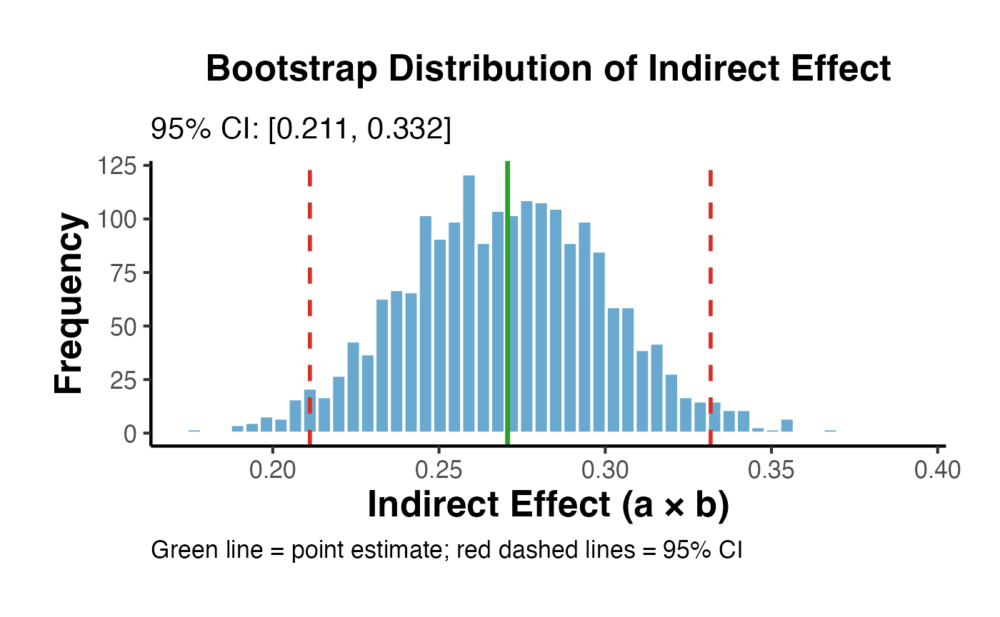
The Baron-Kenny approach has several critical limitations:
No causal identification: The product estimates the ACME only if sequential ignorability holds - an assumption that BK does not require researchers to state or test.
Sobel test is underpowered: The distribution of is generally non-normal, especially when or are small, making the Sobel z-test conservative.
No sensitivity analysis: BK provides no tools to ask “how sensitive is this to unmeasured confounding?”
Step-4 criterion is misleading: BK’s requirement that (partial mediation) or (full mediation) is not necessary for mediation - suppressor effects can produce .
No nonparametric identification: BK relies on linear models and does not extend to binary outcomes without modification.
The mediation package (Imai, Keele, and Tingley 2010) implements a general framework for causal mediation analysis based on the potential outcomes approach. Unlike Baron-Kenny, it:
causalverse::mediation_analysis()
The causalverse wrapper provides a convenient interface:
set.seed(42)
result <- mediation_analysis(
data = med_data,
outcome = "Y",
treatment = "T",
mediator = "M",
covariates = "X",
sims = 1000,
seed = 42
)
# Print summary table
print(result$summary_df)
#> effect estimate ci_lower ci_upper
#> 1 ACME (Indirect) 0.26874628 0.20639532 0.3317208
#> 2 ADE (Direct) 0.05959597 -0.01450085 0.1309103
#> 3 Total Effect 0.32834224 0.23440577 0.4226140
cat("\nProportion mediated:", round(result$prop_mediated * 100, 1), "%\n")
#>
#> Proportion mediated: 81.9 %
result$plot + ama_theme() +
labs(title = "Causal Mediation Decomposition",
subtitle = sprintf("Proportion mediated: %.1f%%", result$prop_mediated * 100))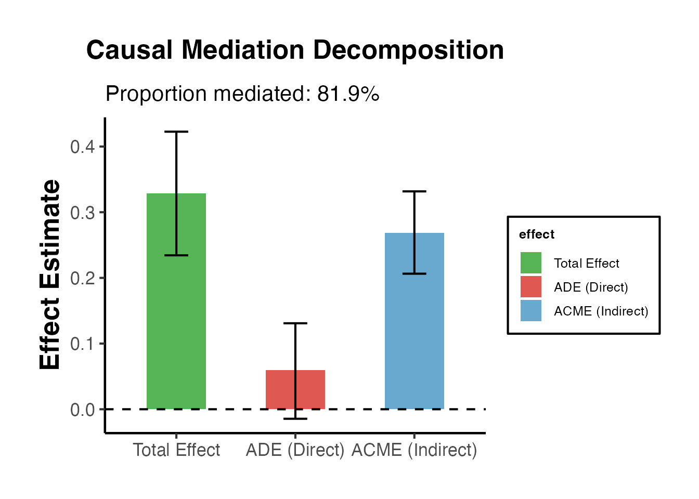
mediation Package
library(mediation)
# Fit the two-equation system
med_fit <- lm(M ~ T + X, data = med_data)
out_fit <- lm(Y ~ T + M + X, data = med_data)
# Run mediation analysis
set.seed(42)
med_out <- mediation::mediate(
model.m = med_fit,
model.y = out_fit,
treat = "T",
mediator = "M",
sims = 1000
)
summary(med_out)
#>
#> Causal Mediation Analysis
#>
#> Quasi-Bayesian Confidence Intervals
#>
#> Estimate 95% CI Lower 95% CI Upper p-value
#> ACME 0.268746 0.206395 0.331721 <2e-16 ***
#> ADE 0.059596 -0.014501 0.130910 0.104
#> Total Effect 0.328342 0.234406 0.422614 <2e-16 ***
#> Prop. Mediated 0.819321 0.661043 1.056551 <2e-16 ***
#> ---
#> Signif. codes: 0 '***' 0.001 '**' 0.01 '*' 0.05 '.' 0.1 ' ' 1
#>
#> Sample Size Used: 1000
#>
#>
#> Simulations: 1000
plot(med_out, main = "Causal Mediation Analysis (Imai et al.)")The mediation package offers two simulation approaches:
| Method |
boot argument |
Description |
|---|---|---|
| Quasi-Bayesian |
FALSE (default) |
Draws from the asymptotic normal distribution of model parameters; faster |
| Nonparametric Bootstrap | TRUE |
Resamples data with replacement; slower but more robust |
# Bootstrap-based CIs (slower but robust)
set.seed(42)
med_boot <- mediation::mediate(
model.m = med_fit,
model.y = out_fit,
treat = "T",
mediator = "M",
boot = TRUE,
sims = 500 # use 1000+ in practice
)
# Compare ACME CIs
s_qb <- summary(med_out)
s_boot <- summary(med_boot)
compare_df <- data.frame(
Method = c("Quasi-Bayesian", "Bootstrap"),
ACME_est = c(s_qb$d.avg, s_boot$d.avg),
ACME_lower = c(s_qb$d.avg.ci[1], s_boot$d.avg.ci[1]),
ACME_upper = c(s_qb$d.avg.ci[2], s_boot$d.avg.ci[2])
)
print(compare_df)
#> Method ACME_est ACME_lower ACME_upper
#> 1 Quasi-Bayesian 0.2687463 0.2063953 0.3317208
#> 2 Bootstrap 0.2706375 0.2038321 0.3329196Even under treatment randomization, sequential ignorability can fail because of unmeasured mediator-outcome confounders. The sensitivity analysis in Imai et al. (2010) asks: how large must the correlation between the mediator-residual and the outcome-residual () be to overturn the ACME estimate?
Define as the correlation between the error terms of the mediator model and the outcome model:
A non-zero implies a common unmeasured cause of and , violating SI.2. Under sequential ignorability .
The sensitivity analysis traces ACME as a function of and finds the at which ACME .
# Sensitivity analysis
sens_out <- mediation::medsens(
med_out,
rho.by = 0.05,
effect.type = "indirect",
sims = 100
)
summary(sens_out)
#>
#> Mediation Sensitivity Analysis for Average Causal Mediation Effect
#>
#> Sensitivity Region
#>
#> Rho ACME 95% CI Lower 95% CI Upper R^2_M*R^2_Y* R^2_M~R^2_Y~
#> [1,] 0.65 -0.0072 -0.0274 0.013 0.4225 0.1592
#>
#> Rho at which ACME = 0: 0.65
#> R^2_M*R^2_Y* at which ACME = 0: 0.4225
#> R^2_M~R^2_Y~ at which ACME = 0: 0.1592
plot(sens_out,
main = "Sensitivity Analysis: ACME vs. Error Correlation (ρ)",
xlab = "Sensitivity Parameter ρ",
ylab = "Estimated ACME",
ylim = c(-0.3, 0.5))
abline(h = 0, lty = 2, col = "red")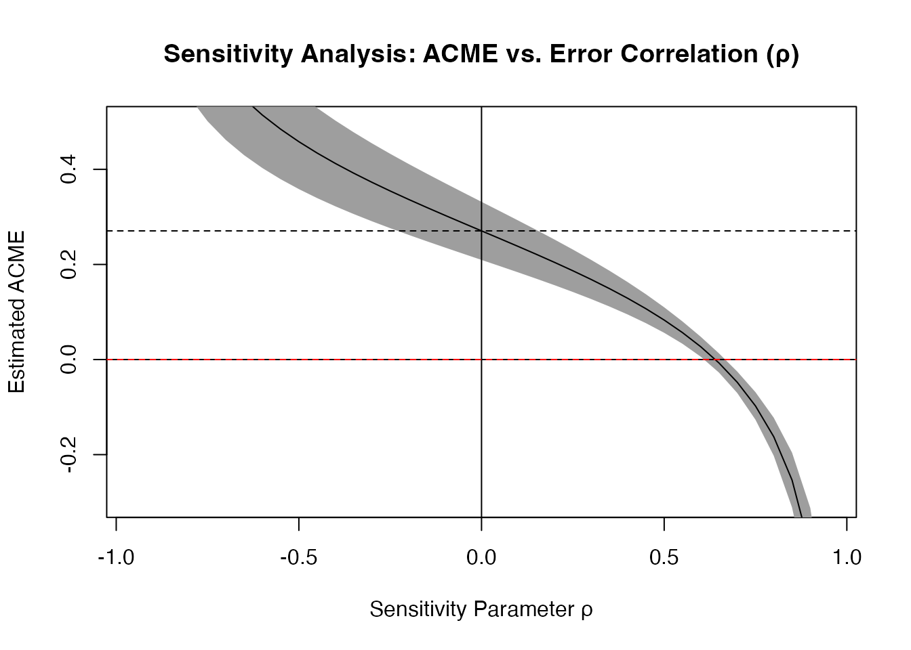
# Find the critical rho (where ACME crosses zero)
# Extract from sensitivity object
rho_vals <- sens_out$rho
acme_vals <- sens_out$d0
# Find crossing
if (any(acme_vals > 0) && any(acme_vals < 0)) {
cross_idx <- which(diff(sign(acme_vals)) != 0)[1]
rho_star <- rho_vals[cross_idx]
cat("Critical rho (ACME = 0):", round(rho_star, 3), "\n")
cat("Interpretation: The ACME remains positive as long as the error\n")
cat("correlation between mediator and outcome models is below", round(rho_star, 3), "\n")
} else {
cat("ACME does not cross zero in the range of rho examined.\n")
cat("This suggests a robust mediation effect.\n")
}
#> Critical rho (ACME = 0): 0.6
#> Interpretation: The ACME remains positive as long as the error
#> correlation between mediator and outcome models is below 0.6The sensitivity analysis presents results in terms of proportions of variance explained by the unmeasured confounder, which is often more interpretable than .
plot(sens_out,
sens.par = "R2",
main = "Sensitivity: Proportion of Variance Explained",
r.type = "total",
sign.prod = "positive")The E-value (VanderWeele and Ding 2017) quantifies the minimum strength of unmeasured confounding needed to explain away the mediated effect. For a risk ratio scale:
For linear models, we can convert effect sizes to approximate relative risks:
# Manual E-value calculation for mediation
# Effect size: Cohen's d for indirect effect
acme_est <- result$acme
sd_Y <- sd(med_data$Y)
d_acme <- acme_est / sd_Y # Standardized indirect effect
# Approximate RR (for small effects: RR ≈ exp(ln(OR)) or use z-to-RR approximation)
# Using approximation: d ≈ ln(OR)/1.81, then OR to RR
# For simplicity, we use: E-value for standardized mean difference
# E-value = exp(0.91 * sqrt(d^2 + 4)) + exp(0.91 * sqrt(d^2 + 4)) - 1 [Sjolander 2020]
# Simpler: for continuous outcomes, evaluate using the unstandardized scale
# E-value based on ratio metric (approximate)
# Point estimate E-value: RR = exp(0.91 * d) [common approximation]
RR_approx <- exp(0.91 * abs(d_acme))
Evalue <- RR_approx + sqrt(RR_approx * (RR_approx - 1))
cat("Standardized ACME (Cohen's d):", round(d_acme, 3), "\n")
#> Standardized ACME (Cohen's d): 0.332
cat("Approximate RR: ", round(RR_approx, 3), "\n")
#> Approximate RR: 1.353
cat("E-value for ACME: ", round(Evalue, 3), "\n")
#> E-value for ACME: 2.044
cat("\nInterpretation: An unmeasured confounder would need to be associated\n")
#>
#> Interpretation: An unmeasured confounder would need to be associated
cat("with both the mediator and outcome by a risk ratio of at least",
round(Evalue, 2), "to\nexplain away the observed mediated effect.\n")
#> with both the mediator and outcome by a risk ratio of at least 2.04 to
#> explain away the observed mediated effect.causalverse::med_ind() - Monte Carlo Indirect Effects
The med_ind() function in causalverse implements the Monte Carlo method (Selig and Preacher 2008) for estimating indirect effects. Rather than relying on the Sobel normal approximation, it simulates the distribution of directly from the joint sampling distribution of path coefficients.
Given: - Path coefficient with variance - Path coefficient with variance - Covariance
The function draws pairs from a bivariate normal distribution and computes the distribution of .
# Extract path coefficients and their variances from our models
a_val <- coef(step2)["T"]
b_val <- coef(step3)["M"]
var_a <- vcov(step2)["T", "T"]
var_b <- vcov(step3)["M", "M"]
# Covariance between a and b is typically 0 (different regression models)
# unless we use a system estimator; here we set it to 0
cov_ab <- 0
# Run Monte Carlo simulation
mc_result <- med_ind(
a = a_val,
b = b_val,
var_a = var_a,
var_b = var_b,
cov_ab = cov_ab,
ci = 95,
iterations = 20000,
seed = 42
)
cat("Monte Carlo 95% CI for indirect effect:\n")
#> Monte Carlo 95% CI for indirect effect:
cat(" Lower:", round(mc_result$lower_quantile, 4), "\n")
#> Lower: 0.21
cat(" Upper:", round(mc_result$upper_quantile, 4), "\n")
#> Upper: 0.3334
cat(" Point estimate (a*b):", round(a_val * b_val, 4), "\n")
#> Point estimate (a*b): 0.2706
# Display the distribution plot
mc_result$plot + ama_theme()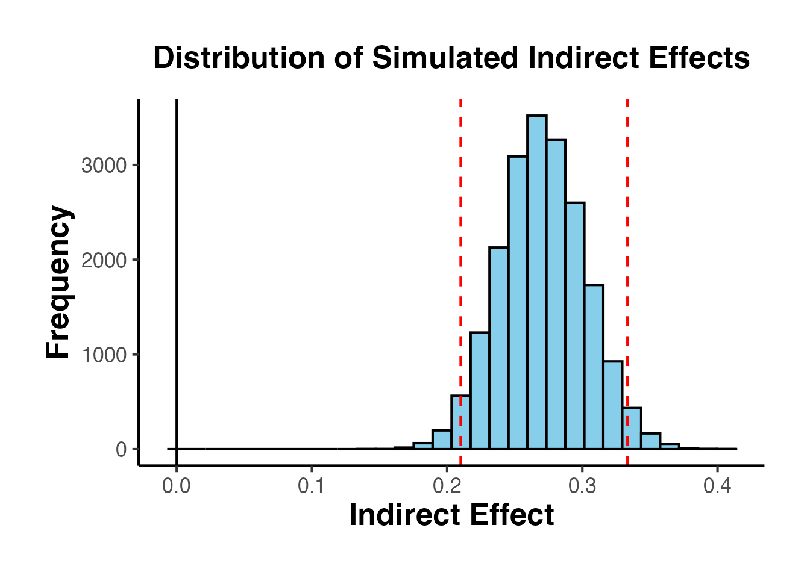
comparison <- data.frame(
Method = c("Sobel (Delta)", "Bootstrap", "Monte Carlo"),
Estimate = rep(round(a_val * b_val, 4), 3),
Lower_95 = c(
round(a_val * b_val - 1.96 * se_sobel, 4),
round(ci_boot[1], 4),
round(mc_result$lower_quantile, 4)
),
Upper_95 = c(
round(a_val * b_val + 1.96 * se_sobel, 4),
round(ci_boot[2], 4),
round(mc_result$upper_quantile, 4)
)
)
print(comparison)
#> Method Estimate Lower_95 Upper_95
#> 1 Sobel (Delta) 0.2706 0.2095 0.3318
#> 2 Bootstrap 0.2706 0.2112 0.3317
#> 3 Monte Carlo 0.2706 0.2100 0.3334| Scenario | Recommendation |
|---|---|
| Small samples (n < 100) | Bootstrap (more accurate in tails) |
| Moderate samples (100–500) | Monte Carlo or bootstrap (similar) |
| Large samples (n > 500) | Monte Carlo (faster, asymptotically equivalent) |
| Non-normal path coefficients | Bootstrap |
| Complex models (SEM, MLM) | Monte Carlo (easier to implement) |
| Time constraints | Monte Carlo |
Real-world mechanisms often involve multiple pathways. Researchers must distinguish between:
set.seed(123)
n <- 500
# DGP: T -> M1 -> Y (indirect1 = 0.3 * 0.4 = 0.12)
# T -> M2 -> Y (indirect2 = 0.5 * 0.3 = 0.15)
# T -> Y (direct = 0.1)
T2 <- rbinom(n, 1, 0.5)
M1 <- 0.3 * T2 + rnorm(n, 0, 0.8)
M2 <- 0.5 * T2 + rnorm(n, 0, 0.8)
Y2 <- 0.4 * M1 + 0.3 * M2 + 0.1 * T2 + rnorm(n, 0, 0.8)
df_par <- data.frame(T = T2, M1 = M1, M2 = M2, Y = Y2)
# Estimate each indirect effect separately
# M1 pathway
m_m1 <- lm(M1 ~ T, data = df_par)
m_y_m1 <- lm(Y ~ T + M1 + M2, data = df_par)
a1 <- coef(m_m1)["T"]
b1 <- coef(m_y_m1)["M1"]
ie1 <- a1 * b1
# M2 pathway
m_m2 <- lm(M2 ~ T, data = df_par)
a2 <- coef(m_m2)["T"]
b2 <- coef(m_y_m1)["M2"]
ie2 <- a2 * b2
# Total indirect and direct
cp <- coef(m_y_m1)["T"]
tot <- ie1 + ie2 + cp
cat("Parallel Mediation Results:\n")
#> Parallel Mediation Results:
cat(" Indirect via M1:", round(ie1, 4), "(true: 0.12)\n")
#> Indirect via M1: 0.1909 (true: 0.12)
cat(" Indirect via M2:", round(ie2, 4), "(true: 0.15)\n")
#> Indirect via M2: 0.1148 (true: 0.15)
cat(" Direct effect: ", round(cp, 4), "(true: 0.10)\n")
#> Direct effect: 0.1935 (true: 0.10)
cat(" Total effect: ", round(tot, 4), "(true: 0.37)\n")
#> Total effect: 0.4992 (true: 0.37)
cat(" Prop. via M1: ", round(ie1/tot, 3), "\n")
#> Prop. via M1: 0.383
cat(" Prop. via M2: ", round(ie2/tot, 3), "\n")
#> Prop. via M2: 0.23
set.seed(456)
n <- 500
# DGP: T -> M1 -> M2 -> Y
# T -> M1: a1 = 0.6
# M1 -> M2: d21 = 0.5
# M2 -> Y: b2 = 0.4
# T -> M2 direct: a2 = 0.1 (spurious)
# T -> Y direct: cp = 0.15
T3 <- rbinom(n, 1, 0.5)
M1s <- 0.6 * T3 + rnorm(n, 0, 0.8)
M2s <- 0.5 * M1s + 0.1 * T3 + rnorm(n, 0, 0.7)
Y3 <- 0.4 * M2s + 0.15 * T3 + rnorm(n, 0, 0.7)
df_seq <- data.frame(T = T3, M1 = M1s, M2 = M2s, Y = Y3)
# Sequential paths
sm1 <- lm(M1 ~ T, data = df_seq)
sm2 <- lm(M2 ~ T + M1, data = df_seq)
sy <- lm(Y ~ T + M1 + M2, data = df_seq)
a1s <- coef(sm1)["T"] # T -> M1
d21s <- coef(sm2)["M1"] # M1 -> M2
b2s <- coef(sy)["M2"] # M2 -> Y
# Specific indirect effects:
ie_seq1 <- a1s * d21s * b2s # T -> M1 -> M2 -> Y
ie_seq2 <- a1s * coef(sy)["M1"] # T -> M1 -> Y (if M1 also affects Y)
ie_seq3 <- coef(sm2)["T"] * b2s # T -> M2 -> Y (bypassing M1)
direct_s <- coef(sy)["T"]
cat("Sequential Mediation (T -> M1 -> M2 -> Y):\n")
#> Sequential Mediation (T -> M1 -> M2 -> Y):
cat(" T -> M1 -> M2 -> Y:", round(ie_seq1, 4), "(true:", 0.6*0.5*0.4, ")\n")
#> T -> M1 -> M2 -> Y: 0.0966 (true: 0.12 )
cat(" T -> M2 -> Y (direct T->M2):", round(ie_seq3, 4), "\n")
#> T -> M2 -> Y (direct T->M2): 0.0357
cat(" Direct T -> Y: ", round(direct_s, 4), "(true: 0.15)\n")
#> Direct T -> Y: 0.2067 (true: 0.15)lavaan
library(lavaan)
# Parallel mediation SEM model
model_par <- "
# Mediator equations
M1 ~ a1*T
M2 ~ a2*T
# Outcome equation
Y ~ cp*T + b1*M1 + b2*M2
# Defined parameters
indirect1 := a1*b1
indirect2 := a2*b2
total_indirect := a1*b1 + a2*b2
total := cp + a1*b1 + a2*b2
prop_m1 := a1*b1 / (cp + a1*b1 + a2*b2)
prop_m2 := a2*b2 / (cp + a1*b1 + a2*b2)
"
set.seed(42)
fit_par <- lavaan::sem(model_par, data = df_par, se = "bootstrap",
bootstrap = 500)
# Extract parameter estimates with CIs
as.data.frame(lavaan::parameterEstimates(
fit_par,
boot.ci.type = "perc",
level = 0.95,
output = "text"
))[c("indirect1", "indirect2", "total_indirect", "total", "prop_m1", "prop_m2"), ]
#> lhs op rhs label exo est se z pvalue ci.lower ci.upper
#> NA <NA> <NA> <NA> <NA> NA NA NA NA NA NA NA
#> NA.1 <NA> <NA> <NA> <NA> NA NA NA NA NA NA NA
#> NA.2 <NA> <NA> <NA> <NA> NA NA NA NA NA NA NA
#> NA.3 <NA> <NA> <NA> <NA> NA NA NA NA NA NA NA
#> NA.4 <NA> <NA> <NA> <NA> NA NA NA NA NA NA NA
#> NA.5 <NA> <NA> <NA> <NA> NA NA NA NA NA NA NA
# Model fit indices
lavaan::fitmeasures(fit_par, c("cfi", "rmsea", "srmr", "tli", "chisq", "df", "pvalue"))
#> cfi rmsea srmr tli chisq df pvalue
#> 1.000 0.000 0.004 1.024 0.061 1.000 0.806Moderated mediation (also called conditional process analysis, Hayes 2013) asks whether the mediated effect varies as a function of a moderator .
The Index of Moderated Mediation (IMM) tests whether the indirect effect is significantly different across levels of .
First-stage moderated mediation (PROCESS Model 7):
Conditional indirect effect at :
set.seed(789)
n <- 600
# DGP: T -> M (moderated by W)
# M -> Y (path b = 0.4)
# T -> Y directly (c' = 0.1)
# a(W) = 0.3 + 0.4*W
W <- rnorm(n) # Continuous moderator
T4 <- rbinom(n, 1, 0.5)
M4 <- (0.3 + 0.4 * W) * T4 + 0.2 * W + rnorm(n, 0, 0.7)
Y4 <- 0.4 * M4 + 0.1 * T4 + 0.1 * W + rnorm(n, 0, 0.7)
df_mm <- data.frame(T = T4, M = M4, W = W, Y = Y4)
# Fit PROCESS-style models
# First stage: M ~ T + W + T*W
m_mm_med <- lm(M ~ T * W, data = df_mm)
# Second stage: Y ~ T + M + W
m_mm_out <- lm(Y ~ T + M + W, data = df_mm)
summary(m_mm_med)
#>
#> Call:
#> lm(formula = M ~ T * W, data = df_mm)
#>
#> Residuals:
#> Min 1Q Median 3Q Max
#> -2.14765 -0.46097 0.01146 0.45713 2.12315
#>
#> Coefficients:
#> Estimate Std. Error t value Pr(>|t|)
#> (Intercept) -0.02003 0.04008 -0.500 0.617
#> T 0.28920 0.05709 5.066 5.43e-07 ***
#> W 0.24313 0.04247 5.725 1.64e-08 ***
#> T:W 0.40138 0.05835 6.879 1.53e-11 ***
#> ---
#> Signif. codes: 0 '***' 0.001 '**' 0.01 '*' 0.05 '.' 0.1 ' ' 1
#>
#> Residual standard error: 0.6957 on 596 degrees of freedom
#> Multiple R-squared: 0.361, Adjusted R-squared: 0.3578
#> F-statistic: 112.3 on 3 and 596 DF, p-value: < 2.2e-16
# Extract coefficients
a1_mm <- coef(m_mm_med)["T"]
a3_mm <- coef(m_mm_med)["T:W"]
b1_mm <- coef(m_mm_out)["M"]
# Evaluate at typical moderator values (mean - 1 SD, mean, mean + 1 SD)
w_vals <- c(mean(W) - sd(W), mean(W), mean(W) + sd(W))
w_labs <- c("-1 SD", "Mean", "+1 SD")
cie_df <- data.frame(
W_level = w_labs,
W_value = w_vals,
path_a = a1_mm + a3_mm * w_vals,
indirect = (a1_mm + a3_mm * w_vals) * b1_mm
)
print(cie_df)
#> W_level W_value path_a indirect
#> 1 -1 SD -0.973525656 -0.1015557 -0.04188826
#> 2 Mean 0.007291729 0.2921255 0.12049175
#> 3 +1 SD 0.988109113 0.6858068 0.28287176
set.seed(42)
n_boot2 <- 1000
boot_cie <- matrix(NA, nrow = n_boot2, ncol = 3)
for (i in seq_len(n_boot2)) {
idx <- sample(nrow(df_mm), replace = TRUE)
bd <- df_mm[idx, ]
bm <- lm(M ~ T * W, data = bd)
by <- lm(Y ~ T + M + W, data = bd)
ba1 <- coef(bm)["T"]
ba3 <- coef(bm)["T:W"]
bb1 <- coef(by)["M"]
boot_cie[i, ] <- (ba1 + ba3 * w_vals) * bb1
}
# 95% percentile CIs
ci_cie <- apply(boot_cie, 2, quantile, c(0.025, 0.975))
cie_results <- data.frame(
W_level = w_labs,
Estimate = cie_df$indirect,
Lower_95 = ci_cie[1, ],
Upper_95 = ci_cie[2, ]
)
print(cie_results)
#> W_level Estimate Lower_95 Upper_95
#> 1 -1 SD -0.04188826 -0.10916378 0.02133179
#> 2 Mean 0.12049175 0.06668162 0.17809171
#> 3 +1 SD 0.28287176 0.19807505 0.38069535
# Compute CIE across range of W
w_range <- seq(min(W), max(W), length.out = 100)
n_boot3 <- 500
boot_cie2 <- matrix(NA, nrow = n_boot3, ncol = length(w_range))
set.seed(42)
for (i in seq_len(n_boot3)) {
idx <- sample(nrow(df_mm), replace = TRUE)
bd <- df_mm[idx, ]
bm <- lm(M ~ T * W, data = bd)
by <- lm(Y ~ T + M + W, data = bd)
ba1 <- coef(bm)["T"]
ba3 <- coef(bm)["T:W"]
bb1 <- coef(by)["M"]
boot_cie2[i, ] <- (ba1 + ba3 * w_range) * bb1
}
cie_line <- (a1_mm + a3_mm * w_range) * b1_mm
cie_lo <- apply(boot_cie2, 2, quantile, 0.025)
cie_hi <- apply(boot_cie2, 2, quantile, 0.975)
plot_df <- data.frame(W = w_range, CIE = cie_line, Lower = cie_lo, Upper = cie_hi)
ggplot(plot_df, aes(x = W, y = CIE)) +
geom_ribbon(aes(ymin = Lower, ymax = Upper), fill = "#4393C3", alpha = 0.25) +
geom_line(linewidth = 1.2, color = "#2171B5") +
geom_hline(yintercept = 0, linetype = "dashed", color = "#D73027") +
geom_vline(xintercept = w_vals, linetype = "dotted", color = "gray40") +
annotate("text", x = w_vals, y = max(cie_hi) * 1.05,
label = w_labs, size = 3.5, hjust = 0.5, color = "gray30") +
labs(
title = "Conditional Indirect Effect as a Function of Moderator W",
subtitle = "Shaded region = 95% bootstrap CI; dashed = zero line",
x = "Moderator W",
y = "Indirect Effect",
caption = "PROCESS Model 7: First-stage moderated mediation"
) +
ama_theme()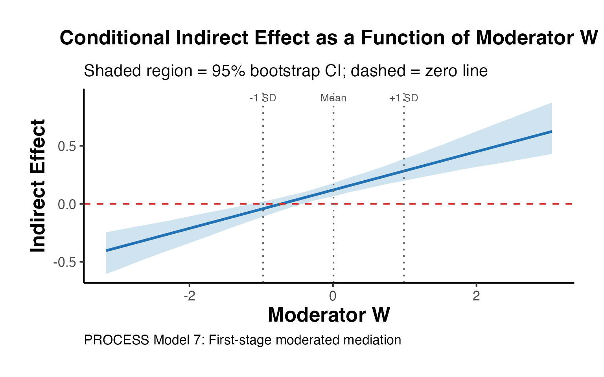
# IMM = a3 * b1 (the interaction term's contribution to the indirect effect slope)
imm_est <- a3_mm * b1_mm
# Bootstrap CI for IMM
imm_boot <- numeric(n_boot2)
set.seed(42)
for (i in seq_len(n_boot2)) {
idx <- sample(nrow(df_mm), replace = TRUE)
bd <- df_mm[idx, ]
bm <- lm(M ~ T * W, data = bd)
by <- lm(Y ~ T + M + W, data = bd)
imm_boot[i] <- coef(bm)["T:W"] * coef(by)["M"]
}
imm_ci <- quantile(imm_boot, c(0.025, 0.975))
cat("Index of Moderated Mediation:\n")
#> Index of Moderated Mediation:
cat(" IMM estimate:", round(imm_est, 4), "\n")
#> IMM estimate: 0.1656
cat(" 95% CI: [", round(imm_ci[1], 4), ",", round(imm_ci[2], 4), "]\n")
#> 95% CI: [ 0.1106 , 0.2297 ]
cat(" Significant:", ifelse(imm_ci[1] > 0 | imm_ci[2] < 0, "Yes", "No"), "\n")
#> Significant: YesThe Johnson-Neyman technique identifies the exact values of where the indirect effect transitions from non-significant to significant (or vice versa).
# Find JN points: where does the 95% CI of CIE cross zero?
cross_lo <- which(diff(sign(cie_lo)) != 0)
cross_hi <- which(diff(sign(cie_hi)) != 0)
jn_points <- numeric(0)
if (length(cross_lo) > 0) jn_points <- c(jn_points, w_range[cross_lo[1]])
if (length(cross_hi) > 0) jn_points <- c(jn_points, w_range[cross_hi[1]])
# Floodlight plot
# Regions of significance: where both CI bounds are on same side of zero
sig_region <- (cie_lo > 0 & cie_hi > 0) | (cie_lo < 0 & cie_hi < 0)
# Plot with significance regions highlighted
ggplot(plot_df, aes(x = W)) +
# Non-significant background
geom_ribbon(aes(ymin = Lower, ymax = Upper), fill = "gray80", alpha = 0.4) +
# Significant regions
geom_ribbon(data = plot_df[sig_region, ],
aes(ymin = Lower, ymax = Upper), fill = "#4393C3", alpha = 0.4) +
geom_line(aes(y = CIE), linewidth = 1.2, color = "#2171B5") +
geom_line(aes(y = Lower), linetype = "dashed", color = "gray50", linewidth = 0.7) +
geom_line(aes(y = Upper), linetype = "dashed", color = "gray50", linewidth = 0.7) +
geom_hline(yintercept = 0, linetype = "solid", color = "#D73027", linewidth = 0.8) +
{if (length(jn_points) > 0)
geom_vline(xintercept = jn_points, linetype = "longdash", color = "#D73027", linewidth = 1)
} +
labs(
title = "Floodlight Analysis: Johnson-Neyman Technique",
subtitle = "Blue shading = region where indirect effect is significant (95% CI excludes zero)",
x = "Moderator W",
y = "Conditional Indirect Effect",
caption = "Red vertical lines = Johnson-Neyman points of significance transition"
) +
ama_theme()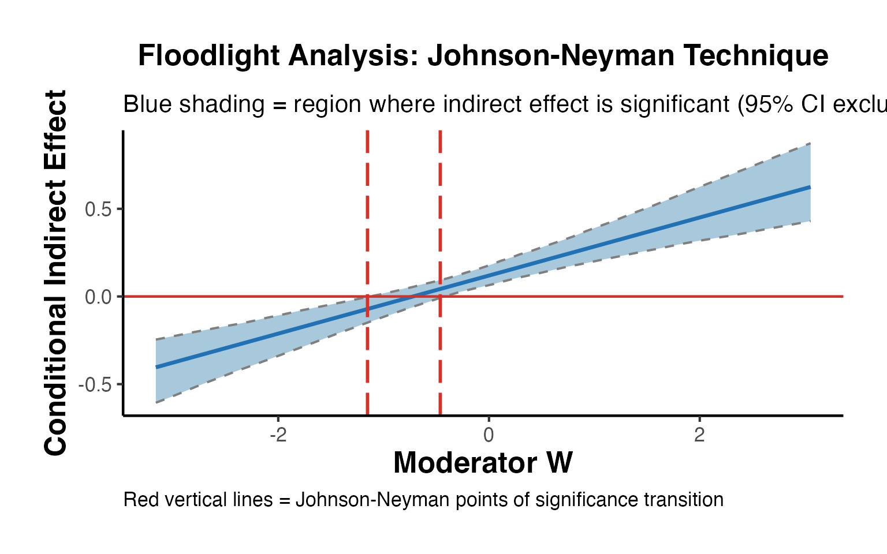
When the outcome (or mediator) is binary, the linear mediation model is mis-specified. The mediation package handles this via generalized linear models.
set.seed(101)
n <- 800
# DGP: binary outcome
T5 <- rbinom(n, 1, 0.5)
M5 <- 0.6 * T5 + rnorm(n, 0, 1) # Continuous mediator
p5 <- plogis(-0.5 + 0.3 * T5 + 0.5 * M5) # Logistic outcome
Y5 <- rbinom(n, 1, p5)
df_bin <- data.frame(T = T5, M = M5, Y = Y5)
cat("Outcome prevalence:", round(mean(Y5), 3), "\n")
#> Outcome prevalence: 0.46
cat("Mediator mean (treated): ", round(mean(M5[T5==1]), 3), "\n")
#> Mediator mean (treated): 0.558
cat("Mediator mean (control): ", round(mean(M5[T5==0]), 3), "\n")
#> Mediator mean (control): -0.039
# Mediation with binary outcome
med_m_bin <- lm(M ~ T, data = df_bin) # Mediator model: OLS
med_y_bin <- glm(Y ~ T + M, data = df_bin, # Outcome model: logistic
family = binomial())
set.seed(42)
med_bin_out <- mediation::mediate(
model.m = med_m_bin,
model.y = med_y_bin,
treat = "T",
mediator = "M",
sims = 500
)
summary(med_bin_out)
#>
#> Causal Mediation Analysis
#>
#> Quasi-Bayesian Confidence Intervals
#>
#> Estimate 95% CI Lower 95% CI Upper p-value
#> ACME (control) 0.057183 0.034810 0.081208 < 2.2e-16 ***
#> ACME (treated) 0.059144 0.036086 0.082439 < 2.2e-16 ***
#> ADE (control) 0.114016 0.043599 0.181766 < 2.2e-16 ***
#> ADE (treated) 0.115977 0.044593 0.186530 < 2.2e-16 ***
#> Total Effect 0.173159 0.100867 0.243207 < 2.2e-16 ***
#> Prop. Mediated (control) 0.331886 0.185652 0.606416 < 2.2e-16 ***
#> Prop. Mediated (treated) 0.343387 0.192854 0.610960 < 2.2e-16 ***
#> ACME (average) 0.058163 0.035510 0.081423 < 2.2e-16 ***
#> ADE (average) 0.114996 0.044096 0.183907 < 2.2e-16 ***
#> Prop. Mediated (average) 0.337637 0.190352 0.608688 < 2.2e-16 ***
#> ---
#> Signif. codes: 0 '***' 0.001 '**' 0.01 '*' 0.05 '.' 0.1 ' ' 1
#>
#> Sample Size Used: 800
#>
#>
#> Simulations: 500With a logistic outcome model, the ACME is estimated on the probability scale (marginal effects), not the log-odds scale. This is because the potential outcomes framework works with the expected value of the outcome, which for binary is a probability.
# Marginal effects for the logistic outcome
m_logit_full <- glm(Y ~ T + M, data = df_bin, family = binomial())
# Average Marginal Effect (AME) of M on Y
# AME_M = E[dP(Y=1)/dM] = E[b * p(1-p)]
p_hat <- predict(m_logit_full, type = "response")
b_logit <- coef(m_logit_full)["M"]
ame_M <- mean(b_logit * p_hat * (1 - p_hat))
cat("Coefficient on M (log-odds):", round(b_logit, 4), "\n")
#> Coefficient on M (log-odds): 0.4195
cat("AME of M on P(Y=1): ", round(ame_M, 4), "\n")
#> AME of M on P(Y=1): 0.0973
cat("(Approx. indirect effect on probability scale)\n")
#> (Approx. indirect effect on probability scale)
set.seed(202)
n <- 800
T6 <- rbinom(n, 1, 0.5)
pM <- plogis(-0.3 + 0.8 * T6)
M6 <- rbinom(n, 1, pM) # Binary mediator
pY <- plogis(-1.0 + 0.4 * T6 + 1.2 * M6)
Y6 <- rbinom(n, 1, pY)
df_bin2 <- data.frame(T = T6, M = M6, Y = Y6)
med_m_bb <- glm(M ~ T, data = df_bin2, family = binomial())
med_y_bb <- glm(Y ~ T + M, data = df_bin2, family = binomial())
set.seed(42)
med_bb <- mediation::mediate(
model.m = med_m_bb,
model.y = med_y_bb,
treat = "T",
mediator = "M",
sims = 500
)
summary(med_bb)
#>
#> Causal Mediation Analysis
#>
#> Quasi-Bayesian Confidence Intervals
#>
#> Estimate 95% CI Lower 95% CI Upper p-value
#> ACME (control) 0.093069 0.063416 0.127038 < 2.2e-16 ***
#> ACME (treated) 0.097596 0.067100 0.132029 < 2.2e-16 ***
#> ADE (control) 0.106592 0.039730 0.172809 < 2.2e-16 ***
#> ADE (treated) 0.111119 0.042153 0.180537 < 2.2e-16 ***
#> Total Effect 0.204188 0.132612 0.278898 < 2.2e-16 ***
#> Prop. Mediated (control) 0.459149 0.295516 0.728167 < 2.2e-16 ***
#> Prop. Mediated (treated) 0.480504 0.322885 0.740878 < 2.2e-16 ***
#> ACME (average) 0.095333 0.065593 0.129085 < 2.2e-16 ***
#> ADE (average) 0.108855 0.040925 0.176654 < 2.2e-16 ***
#> Prop. Mediated (average) 0.469826 0.312116 0.735285 < 2.2e-16 ***
#> ---
#> Signif. codes: 0 '***' 0.001 '**' 0.01 '*' 0.05 '.' 0.1 ' ' 1
#>
#> Sample Size Used: 800
#>
#>
#> Simulations: 500In many settings, the mediated effect varies across subgroups. We can estimate subgroup-specific ACMEs by running separate mediation analyses within each group.
set.seed(303)
n <- 1000
# DGP: ACME differs between high and low X subgroups
X_grp <- rbinom(n, 1, 0.5) # Binary subgroup indicator
T7 <- rbinom(n, 1, 0.5)
# ACME(X=0) = 0.1 * 0.4 = 0.04; ACME(X=1) = 0.6 * 0.4 = 0.24
a_grp <- ifelse(X_grp == 1, 0.6, 0.1)
M7 <- a_grp * T7 + rnorm(n, 0, 0.8)
Y7 <- 0.4 * M7 + 0.2 * T7 + rnorm(n, 0, 0.8)
df_het <- data.frame(T = T7, M = M7, Y = Y7, X = X_grp)
# Subgroup analysis
results_het <- lapply(0:1, function(x) {
sub_df <- df_het[df_het$X == x, ]
m_med <- lm(M ~ T, data = sub_df)
m_out <- lm(Y ~ T + M, data = sub_df)
a_sub <- coef(m_med)["T"]
b_sub <- coef(m_out)["M"]
data.frame(
Subgroup = paste0("X = ", x),
n = nrow(sub_df),
Path_a = round(a_sub, 4),
Path_b = round(b_sub, 4),
ACME = round(a_sub * b_sub, 4),
True_ACME = round(ifelse(x == 1, 0.6, 0.1) * 0.4, 4)
)
})
do.call(rbind, results_het)
#> Subgroup n Path_a Path_b ACME True_ACME
#> T X = 0 474 0.2023 0.3681 0.0745 0.04
#> T1 X = 1 526 0.6622 0.3739 0.2476 0.24When treatment modifies the effect of the mediator on the outcome, the ACME and ADE differ across treatment levels ().
set.seed(404)
n <- 600
T8 <- rbinom(n, 1, 0.5)
M8 <- 0.5 * T8 + rnorm(n, 0, 0.8)
# T × M interaction in outcome model
Y8 <- 0.3 * T8 + 0.4 * M8 + 0.3 * T8 * M8 + rnorm(n, 0, 0.7)
df_int <- data.frame(T = T8, M = M8, Y = Y8)
med_m_int <- lm(M ~ T, data = df_int)
med_y_int <- lm(Y ~ T * M, data = df_int) # Include interaction
set.seed(42)
med_int <- mediation::mediate(
model.m = med_m_int,
model.y = med_y_int,
treat = "T",
mediator = "M",
sims = 500
)
# When T*M interaction is present, d0 ≠ d1
s_int <- summary(med_int)
cat("ACME (T=0): ", round(s_int$d0, 4), "\n")
#> ACME (T=0): 0.2026
cat("ACME (T=1): ", round(s_int$d1, 4), "\n")
#> ACME (T=1): 0.4085
cat("ADE (T=0): ", round(s_int$z0, 4), "\n")
#> ADE (T=0): 0.3379
cat("ADE (T=1): ", round(s_int$z1, 4), "\n")
#> ADE (T=1): 0.5439
cat("Total effect:", round(s_int$tau.coef, 4), "\n")
#> Total effect: 0.7465Causal forests (Wager and Athey 2018) estimate heterogeneous treatment effects using random forests. For mediation, we can use a two-step approach: estimate the CATE and then decompose it into mediated and direct components.
grf
library(grf)
set.seed(505)
n <- 1000
X_grf <- matrix(rnorm(n * 5), n, 5) # 5 covariates
T_grf <- rbinom(n, 1, 0.5)
# ACME varies with X1:
# a(X1) = 0.3 + 0.5 * X1
# b = 0.4 (constant)
# c' = 0.1 (constant)
M_grf <- (0.3 + 0.5 * X_grf[, 1]) * T_grf + rnorm(n, 0, 0.7)
Y_grf <- 0.4 * M_grf + 0.1 * T_grf + 0.2 * X_grf[, 1] + rnorm(n, 0, 0.6)
df_grf <- data.frame(Y = Y_grf, T = T_grf, M = M_grf, X_grf)
# Step 1: Estimate CATE using causal forest
cf <- grf::causal_forest(
X = X_grf,
Y = Y_grf,
W = T_grf,
seed = 42
)
# CATE estimates
cate_hat <- predict(cf)$predictions
cat("CATE summary:\n")
#> CATE summary:
print(summary(cate_hat))
#> Min. 1st Qu. Median Mean 3rd Qu. Max.
#> -0.01764 0.18088 0.27178 0.27520 0.34567 0.68385
# Average treatment effect
ate_grf <- average_treatment_effect(cf, target.sample = "all")
cat("\nATE:", round(ate_grf["estimate"], 4),
"SE:", round(ate_grf["std.err"], 4), "\n")
#>
#> ATE: 0.2742 SE: 0.0414
# Visualize CATE vs X1 (the driver of heterogeneity)
ggplot(data.frame(X1 = X_grf[, 1], CATE = cate_hat), aes(x = X1, y = CATE)) +
geom_point(alpha = 0.3, size = 0.8, color = "#4393C3") +
geom_smooth(method = "loess", se = TRUE, color = "#D73027", linewidth = 1.2) +
geom_hline(yintercept = ate_grf["estimate"], linetype = "dashed", color = "gray40") +
labs(
title = "Heterogeneous Treatment Effects by X1",
subtitle = "CATE estimated via causal forest; red = local regression; dashed = ATE",
x = "Covariate X1",
y = "Estimated CATE"
) +
ama_theme()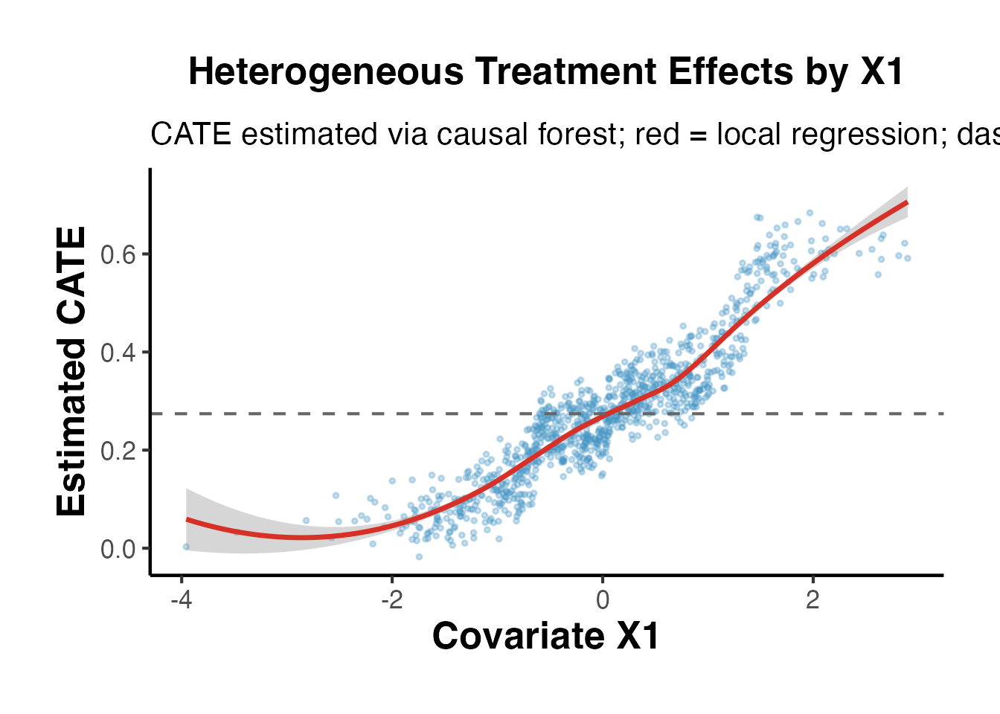
# Step 2: Estimate the mediator effect of T on M
cf_m <- grf::causal_forest(
X = X_grf,
Y = M_grf,
W = T_grf,
seed = 42
)
cate_m_hat <- predict(cf_m)$predictions # a(x): T -> M
# Step 3: Estimate effect of M on Y (assuming linear, controlling for T and X)
# We use a simple approach: regress Y on T, M, X, then extract b
lm_b <- lm(Y_grf ~ T_grf + M_grf + X_grf)
b_hat <- coef(lm_b)["M_grf"]
# Estimated ACME(x) = a(x) * b
acme_hat <- cate_m_hat * b_hat
# Estimated ADE(x) = CATE(x) - ACME(x)
ade_hat <- cate_hat - acme_hat
cat("Heterogeneous ACME via causal forest:\n")
#> Heterogeneous ACME via causal forest:
cat(" Mean ACME:", round(mean(acme_hat), 4), "\n")
#> Mean ACME: 0.113
cat(" SD ACME: ", round(sd(acme_hat), 4), "\n")
#> SD ACME: 0.1214
cat(" Mean ADE: ", round(mean(ade_hat), 4), "\n")
#> Mean ADE: 0.1622
# Correlation of ACME with X1
cat(" Cor(ACME, X1):", round(cor(acme_hat, X_grf[,1]), 4),
"(true: positive, since a(X1) increases in X1)\n")
#> Cor(ACME, X1): 0.9634 (true: positive, since a(X1) increases in X1)
ggplot(
data.frame(X1 = X_grf[, 1], ACME = acme_hat, ADE = ade_hat, CATE = cate_hat),
aes(x = X1)
) +
geom_point(aes(y = ACME, color = "ACME"), alpha = 0.3, size = 0.8) +
geom_point(aes(y = ADE, color = "ADE"), alpha = 0.3, size = 0.8) +
geom_smooth(aes(y = ACME, color = "ACME"), method = "loess", se = FALSE, linewidth = 1.2) +
geom_smooth(aes(y = ADE, color = "ADE"), method = "loess", se = FALSE, linewidth = 1.2) +
geom_hline(yintercept = 0, linetype = "dashed") +
scale_color_manual(values = c("ACME" = "#4393C3", "ADE" = "#D73027"),
name = "Effect") +
labs(
title = "Decomposition of CATE into Mediated and Direct Effects",
subtitle = "ACME increases with X1 (as designed); ADE is approximately constant",
x = "Covariate X1",
y = "Effect Estimate"
) +
ama_theme()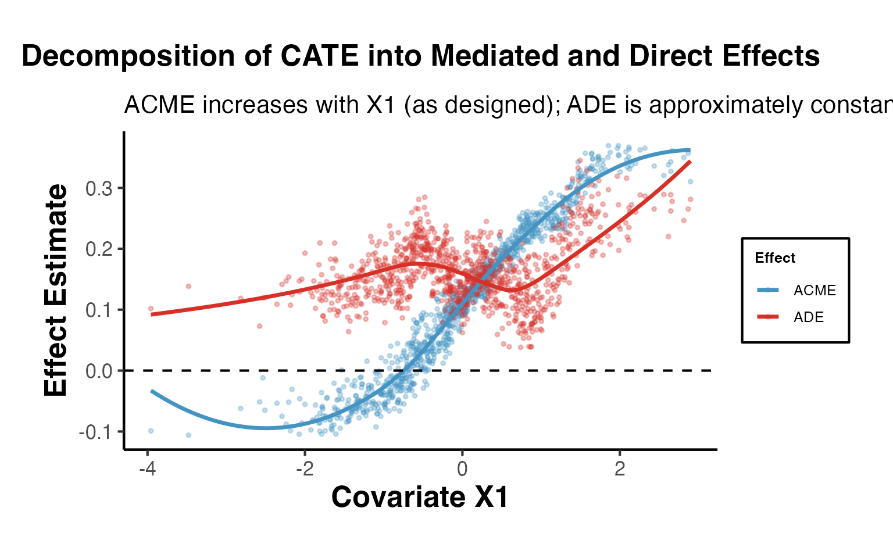
Pearl (2001) and Robins and Greenland (1992) defined the Natural Direct Effect (NDE) and Natural Indirect Effect (NIE) using nested counterfactuals.
Pure Natural Direct Effect (PNDE): The effect of on , with set to the value it would have under control.
Total Natural Indirect Effect (TNIE): The change in when we shift from its control-level value to its treated-level value, while holding .
Total Effect decomposition:
Note: The TNIE under this notation equals the ACME under Imai et al.’s notation (with ).
VanderWeele (2014) proposed decomposing the total effect into four components:
This decomposition is especially informative when treatment and mediator interact.
set.seed(606)
n <- 800
T9 <- rbinom(n, 1, 0.5)
M9 <- 0.5 * T9 + rnorm(n, 0, 0.9)
m0 <- 0 # Reference level for M (e.g., mean under control)
# DGP with T*M interaction
Y9 <- 0.2 * T9 + 0.3 * M9 + 0.4 * T9 * M9 + rnorm(n, 0, 0.8)
df_fw <- data.frame(T = T9, M = M9, Y = Y9)
# Fit models
m_fw_med <- lm(M ~ T, data = df_fw)
m_fw_out <- lm(Y ~ T * M, data = df_fw)
# Extract coefficients
beta_T <- coef(m_fw_out)["T"] # c1
beta_M <- coef(m_fw_out)["M"] # b
beta_TM <- coef(m_fw_out)["T:M"] # theta (interaction)
theta_a <- coef(m_fw_med)["T"] # a (T -> M)
# Four-way decomposition at m0 = mean(M[T==0])
m0_ref <- mean(M9[T9 == 0])
# CDE: direct effect when M = m0
cde <- beta_T + beta_TM * m0_ref
# Reference interaction: theta * (E[M|T=1] - m0) - a * theta
# Actually using VanderWeele 2014 formulas for linear interaction:
# intref = theta_TM * theta_a * (1 - delta_t)...
# For binary T:
intref <- beta_TM * m0_ref * theta_a
intmed <- beta_TM * theta_a^2
pie <- beta_M * theta_a
# Total indirect
total_indirect <- pie + intmed
cat("VanderWeele Four-Way Decomposition:\n")
#> VanderWeele Four-Way Decomposition:
cat(" CDE (controlled direct): ", round(cde, 4), "\n")
#> CDE (controlled direct): 0.2191
cat(" intref (interaction ref): ", round(intref, 4), "\n")
#> intref (interaction ref): 0.0045
cat(" intmed (interaction med): ", round(intmed, 4), "\n")
#> intmed (interaction med): 0.0941
cat(" pie (pure indirect): ", round(pie, 4), "\n")
#> pie (pure indirect): 0.1414
cat(" Total (sum): ", round(cde + intref + intmed + pie, 4), "\n")
#> Total (sum): 0.4592
cat("\n For comparison, OLS total effect:\n")
#>
#> For comparison, OLS total effect:
cat(" lm(Y~T) coef:", round(coef(lm(Y ~ T, data = df_fw))["T"], 4), "\n")
#> lm(Y~T) coef: 0.5557
library(CMAverse)
# CMAverse implements multiple mediation frameworks
# including VanderWeele's four-way decomposition
cmares <- CMAverse::cmest(
data = df_fw,
model = "rb", # Regression-based approach
outcome = "Y",
exposure = "T",
mediator = list("M"),
EMint = TRUE, # Allow exposure-mediator interaction
mreg = list("linear"),
yreg = "linear",
astar = 0, # Reference level of exposure
a = 1, # Comparison level of exposure
mval = list(m0_ref), # Reference mediator value
estimation = "paramfunc",
inference = "bootstrap",
nboot = 200,
seed = 42
)
summary(cmares)DiD designs can be extended to mediation when the mediator is also observed in pre/post periods. The key challenge is that DiD-style arguments about parallel trends must apply to both the mediator and the outcome.
set.seed(707)
n <- 200 # units
T_n <- 2 # pre/post
# Panel structure
unit <- rep(1:n, each = T_n)
time <- rep(0:1, times = n)
treated <- rep(rbinom(n, 1, 0.5), each = T_n)
# Unit fixed effects
unit_fe <- rep(rnorm(n, 0, 1), each = T_n)
# Treatment indicator: treated & post
D <- as.integer(treated == 1 & time == 1)
# Mediator: M affected by D (with parallel trends)
M_pre_effect <- 0
M_post_treat <- 0.6
M_val <- M_pre_effect + M_post_treat * D + unit_fe + rnorm(n * T_n, 0, 0.5)
# Outcome: Y affected by D directly and through M
Y_pre_effect <- 0
Y_post_treat <- 0.2 # direct effect
b_M_Y <- 0.4 # M -> Y
Y_val <- Y_pre_effect + Y_post_treat * D + b_M_Y * M_val + unit_fe + rnorm(n * T_n, 0, 0.5)
df_did <- data.frame(
unit = unit,
time = time,
treated = treated,
D = D,
M = M_val,
Y = Y_val
)
head(df_did)
#> unit time treated D M Y
#> 1 1 0 0 0 -0.3935276 -0.6163786
#> 2 1 1 0 0 -0.1027261 -0.4673374
#> 3 2 0 0 0 -2.3039628 -2.8629020
#> 4 2 1 0 0 -1.2936778 -2.7253654
#> 5 3 0 0 0 -1.0525157 -1.5087866
#> 6 3 1 0 0 -1.6066668 -1.5150896
# Compute first differences (within-unit change)
df_wide <- df_did %>%
tidyr::pivot_wider(
id_cols = c(unit, treated),
names_from = time,
values_from = c(M, Y, D)
) %>%
dplyr::mutate(
dM = M_1 - M_0, # Change in mediator
dY = Y_1 - Y_0, # Change in outcome
dD = D_1 - D_0 # Change in treatment (= treated for balanced panel)
)
# Step 1: Regress dY on dD (total DiD effect)
fd_total <- lm(dY ~ dD, data = df_wide)
cat("Total DiD effect:", round(coef(fd_total)["dD"], 4), "(true: 0.2 + 0.6*0.4 = 0.44)\n")
#> Total DiD effect: 0.2411 (true: 0.2 + 0.6*0.4 = 0.44)
# Step 2: Regress dM on dD (mediator DiD)
fd_med <- lm(dM ~ dD, data = df_wide)
cat("DiD effect on M:", round(coef(fd_med)["dD"], 4), "(true: 0.6)\n")
#> DiD effect on M: 0.4613 (true: 0.6)
# Step 3: Regress dY on dD and dM (direct DiD effect)
fd_direct <- lm(dY ~ dD + dM, data = df_wide)
cat("Direct DiD (c'):", round(coef(fd_direct)["dD"], 4), "(true: 0.2)\n")
#> Direct DiD (c'): 0.0924 (true: 0.2)
cat("Path b (M->Y): ", round(coef(fd_direct)["dM"], 4), "(true: 0.4)\n")
#> Path b (M->Y): 0.3222 (true: 0.4)
# Indirect effect: a * b
a_did <- coef(fd_med)["dD"]
b_did <- coef(fd_direct)["dM"]
cat("Indirect effect: ", round(a_did * b_did, 4), "(true: 0.24)\n")
#> Indirect effect: 0.1487 (true: 0.24)In DiD mediation, the key identification assumption extends beyond parallel trends:
Assumption 3 is the mediator-version of sequential ignorability - it is typically not testable but can be probed by including additional controls or running pre-trend tests on the mediator.
Pearl’s front-door criterion (1995) provides a remarkable identification result: when and there is no direct path (all effects are fully mediated), we can identify the causal effect of on even with unmeasured - confounders, provided:
set.seed(808)
n <- 1000
# DGP satisfying front-door:
# U -> T, U -> Y (unmeasured confounder)
# T -> M -> Y (all effect through M)
U <- rnorm(n) # Unmeasured confounder
T_fd <- rbinom(n, 1, plogis(0.8 * U)) # T affected by U
M_fd <- 0.7 * T_fd + rnorm(n, 0, 0.8) # M purely from T
Y_fd <- 0.5 * M_fd + 1.0 * U + rnorm(n, 0, 0.7) # Y from M and U
df_fd <- data.frame(T = T_fd, M = M_fd, Y = Y_fd)
# Note: U is not in df_fd (unmeasured)
# Front-door estimator:
# Step 1: E[M | T=1] - E[M | T=0] (T -> M: no confounding since T is "almost" exogenous to M)
step1_fd <- lm(M ~ T, data = df_fd)
a_fd <- coef(step1_fd)["T"]
# Step 2: Effect of M on Y, controlling for T (blocks backdoor T <- U -> Y)
step2_fd <- lm(Y ~ M + T, data = df_fd)
b_fd <- coef(step2_fd)["M"]
# Front-door estimate = a * b
frontdoor_est <- a_fd * b_fd
# Naive OLS (biased due to U)
naive_est <- coef(lm(Y ~ T, data = df_fd))["T"]
# True effect
true_eff <- 0.7 * 0.5 # a * b = 0.35
cat("Front-door estimate:", round(frontdoor_est, 4), "(true:", true_eff, ")\n")
#> Front-door estimate: 0.3402 (true: 0.35 )
cat("Naive OLS estimate: ", round(naive_est, 4), "(biased upward due to U)\n")
#> Naive OLS estimate: 0.9291 (biased upward due to U)
cat("Bias in OLS: ", round(naive_est - true_eff, 4), "\n")
#> Bias in OLS: 0.5791When treatment is assigned via an instrument and the mediator is also instrumented, we can estimate the LATE-based mediation decomposition. This is relevant in settings like: - Job training programs (instrument = random assignment, mediator = employment) - Education experiments (instrument = lottery, mediator = credential attainment)
set.seed(909)
n <- 800
# IV setup: Z -> T -> M -> Y
Z <- rbinom(n, 1, 0.5) # Instrument
T_iv <- rbinom(n, 1, plogis(-0.5 + 1.5 * Z)) # T ~ IV (compliers)
U_iv <- rnorm(n) # Unobs. T-Y confounder
M_iv <- 0.6 * T_iv + rnorm(n, 0, 0.8) # M from T
Y_iv <- 0.4 * M_iv + 0.2 * T_iv + 0.8 * U_iv + rnorm(n, 0, 0.6)
df_iv <- data.frame(Z = Z, T = T_iv, M = M_iv, Y = Y_iv)
# First-stage: T on Z
fs <- lm(T ~ Z, data = df_iv)
T_hat <- fitted(fs)
# Reduced form Y on Z (ITT for outcome)
rf_Y <- lm(Y ~ Z, data = df_iv)
# Reduced form M on Z (ITT for mediator)
rf_M <- lm(M ~ Z, data = df_iv)
# LATE via Wald: ITT_Y / (E[T|Z=1] - E[T|Z=0])
lat_total <- coef(rf_Y)["Z"] / coef(fs)["Z"]
lat_m <- coef(rf_M)["Z"] / coef(fs)["Z"]
cat("LATE for Total Effect:", round(lat_total, 4), "(true ~0.44)\n")
#> LATE for Total Effect: 0.0999 (true ~0.44)
cat("LATE for M: ", round(lat_m, 4), "(true ~0.6)\n")
#> LATE for M: 0.4844 (true ~0.6)When the mediator induces sample selection - for example, employment mediates the wage effect of training, but wages are only observed for the employed - we face a truncation problem. The Lee (2009) bounds provide sharp bounds on the treatment effect for always-employed workers (“always-takers” in the mediator).
set.seed(1001)
n <- 1000
T_lb <- rbinom(n, 1, 0.5)
# Employment (M = 1 means employed):
pEmp <- plogis(-0.5 + 1.2 * T_lb)
M_lb <- rbinom(n, 1, pEmp) # Binary mediator (employed = 1)
# Wage (Y only observed if employed):
Y_lb_full <- 2.0 + 0.5 * T_lb + rnorm(n, 0, 1)
Y_lb <- ifelse(M_lb == 1, Y_lb_full, NA) # Censored for unemployed
df_lb <- data.frame(T = T_lb, M = M_lb, Y = Y_lb)
cat("Employment rate (control):", round(mean(M_lb[T_lb==0]), 3), "\n")
#> Employment rate (control): 0.405
cat("Employment rate (treated):", round(mean(M_lb[T_lb==1]), 3), "\n")
#> Employment rate (treated): 0.673
cat("Wage observed: ", sum(!is.na(Y_lb)), "/", n, "\n")
#> Wage observed: 535 / 1000When MedBounds is unavailable, we can compute Lee bounds manually:
# Lee (2009) bounds for the effect of T on Y among always-employed
# Step 1: Compute employment rates
p0 <- mean(M_lb[T_lb == 0]) # P(employed | T=0)
p1 <- mean(M_lb[T_lb == 1]) # P(employed | T=1)
q <- p0 / p1 # Trimming proportion (assuming p1 > p0)
cat("Trimming fraction q = p0/p1:", round(q, 4), "\n")
#> Trimming fraction q = p0/p1: 0.6014
# Step 2: Trim the treated group's outcomes
# Lower bound: keep the bottom q-fraction of treated employed wages
# Upper bound: keep the top q-fraction of treated employed wages
Y_treated_emp <- sort(Y_lb[T_lb == 1 & !is.na(Y_lb)])
n_trim <- floor(q * length(Y_treated_emp))
Y_trim_lower <- Y_treated_emp[seq_len(length(Y_treated_emp) - n_trim)]
Y_trim_upper <- Y_treated_emp[(n_trim + 1):length(Y_treated_emp)]
# Control group wages (observed)
Y_control_emp <- Y_lb[T_lb == 0 & !is.na(Y_lb)]
# Bounds: E[Y|T=1, trimmed] - E[Y|T=0, employed]
lb_lower <- mean(Y_trim_lower) - mean(Y_control_emp)
lb_upper <- mean(Y_trim_upper) - mean(Y_control_emp)
cat("\nLee Bounds (manual):\n")
#>
#> Lee Bounds (manual):
cat(" Lower bound:", round(lb_lower, 4), "\n")
#> Lower bound: -0.4703
cat(" Upper bound:", round(lb_upper, 4), "\n")
#> Upper bound: 1.5355
cat(" True effect on wages:", 0.5, "\n")
#> True effect on wages: 0.5
cat(" The true effect lies within the bounds:",
lb_lower <= 0.5 & 0.5 <= lb_upper, "\n")
#> The true effect lies within the bounds: TRUEcausalverse::lee_bounds() (requires MedBounds package)
The causalverse::lee_bounds() function provides a formal implementation with bootstrap standard errors:
# Note: requires MedBounds package (not on CRAN)
# Installation: devtools::install_github("jonathandroth/MedBounds")
bounds_result <- lee_bounds(
df = df_lb,
d = "T",
m = "M",
y = "Y",
numdraws = 500
)
print(bounds_result)The output provides lower and upper bounds with bootstrap standard errors, allowing researchers to construct confidence intervals that account for both identification uncertainty (the bounds themselves) and estimation uncertainty.
Publication-quality visualization is essential for communicating mediation results. This section provides a complete set of plots.
# Manual path diagram using base R graphics
par(mar = c(1, 1, 2, 1), bg = "white")
plot(0, 0, type = "n", xlim = c(0, 10), ylim = c(0, 5),
axes = FALSE, xlab = "", ylab = "",
main = "Mediation Path Diagram")
# Boxes
rect(0.5, 2, 2.5, 3.5, col = "#EFF3FF", border = "#2171B5", lwd = 2)
rect(4, 2, 6, 3.5, col = "#FEE6CE", border = "#D94801", lwd = 2)
rect(7.5, 2, 9.5, 3.5, col = "#E5F5E0", border = "#31A354", lwd = 2)
# Labels
text(1.5, 2.75, "T\n(Treatment)", cex = 1.1, font = 2)
text(5.0, 2.75, "M\n(Mediator)", cex = 1.1, font = 2)
text(8.5, 2.75, "Y\n(Outcome)", cex = 1.1, font = 2)
# Arrows: T -> M (path a)
arrows(2.5, 2.75, 4.0, 2.75, lwd = 2, col = "#D94801", length = 0.15)
text(3.25, 3.1, paste0("a = ", round(a_coef, 3)), cex = 1, col = "#D94801")
# Arrows: M -> Y (path b)
arrows(6.0, 2.75, 7.5, 2.75, lwd = 2, col = "#31A354", length = 0.15)
text(6.75, 3.1, paste0("b = ", round(b_coef, 3)), cex = 1, col = "#31A354")
# Arrow: T -> Y directly (path c')
arrows(2.5, 2.2, 7.5, 2.2, lwd = 2, col = "#2171B5", length = 0.15)
text(5.0, 1.7, paste0("c' = ", round(cp_coef, 3)), cex = 1, col = "#2171B5")
# Annotation
text(5.0, 0.8,
paste0("Indirect (a×b) = ", round(a_coef * b_coef, 3),
" | Total = ", round(a_coef * b_coef + cp_coef, 3)),
cex = 0.95, col = "gray30")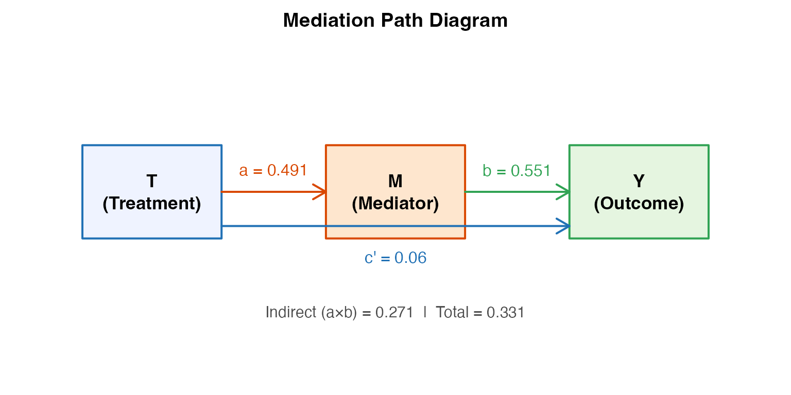
# Use causalverse mediation result
decomp_df <- result$summary_df
decomp_df$effect <- factor(decomp_df$effect,
levels = c("ACME (Indirect)", "ADE (Direct)", "Total Effect"))
ggplot(decomp_df, aes(x = effect, y = estimate, fill = effect)) +
geom_col(alpha = 0.85, width = 0.55) +
geom_errorbar(aes(ymin = ci_lower, ymax = ci_upper),
width = 0.18, linewidth = 0.9) +
geom_hline(yintercept = 0, linetype = "dashed", color = "gray40") +
geom_text(aes(label = sprintf("%.3f", estimate),
y = estimate + 0.015 * sign(estimate)),
vjust = -0.5, fontface = "bold", size = 4) +
scale_fill_manual(values = c(
"ACME (Indirect)" = "#4393C3",
"ADE (Direct)" = "#D73027",
"Total Effect" = "#2CA02C"
)) +
labs(
title = "Causal Mediation Decomposition",
subtitle = paste0("Proportion mediated: ",
round(result$prop_mediated * 100, 1), "%"),
x = NULL,
y = "Effect Estimate (95% CI)",
caption = "Error bars = 95% quasi-Bayesian CIs; ACME via Imai et al. (2010)"
) +
ama_theme() +
theme(legend.position = "none")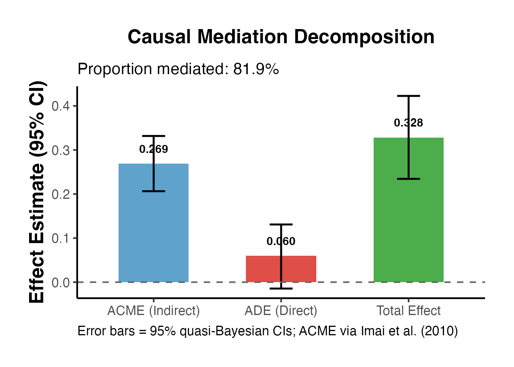
# Extract sensitivity data
rho_seq <- seq(-0.9, 0.9, by = 0.05)
acme_rho <- sens_out$d0 # ACME estimates at each rho
ci_lo_s <- sens_out$d0.ci[, 1]
ci_hi_s <- sens_out$d0.ci[, 2]
sens_df <- data.frame(
rho = sens_out$rho,
ACME = sens_out$d0,
lo = sens_out$d0.ci[, 1],
hi = sens_out$d0.ci[, 2]
)
ggplot(sens_df, aes(x = rho, y = ACME)) +
geom_ribbon(aes(ymin = lo, ymax = hi), fill = "#4393C3", alpha = 0.25) +
geom_line(linewidth = 1.2, color = "#2171B5") +
geom_hline(yintercept = 0, linetype = "dashed", color = "#D73027", linewidth = 1) +
geom_vline(xintercept = 0, linetype = "dotted", color = "gray50") +
annotate("text", x = 0.05, y = min(sens_df$ACME, na.rm = TRUE) * 0.9,
label = "Sequential\nIgnorability", hjust = 0, size = 3.5, color = "gray40") +
labs(
title = "Sensitivity Analysis: ACME as Function of Error Correlation",
subtitle = "Shaded = 95% CI; dashed = zero line; dotted = ρ = 0 (sequential ignorability)",
x = "Sensitivity Parameter ρ (Cor. of Mediator-Outcome Residuals)",
y = "Estimated ACME",
caption = "Imai et al. (2010) sensitivity; ρ = 0 = sequential ignorability holds"
) +
ama_theme()
set.seed(42)
n_boot4 <- 1000
boot_pm <- numeric(n_boot4)
boot_acme_v <- numeric(n_boot4)
boot_ade_v <- numeric(n_boot4)
for (i in seq_len(n_boot4)) {
idx <- sample(nrow(med_data), replace = TRUE)
bd <- med_data[idx, ]
m2 <- lm(M ~ T + X, data = bd)
m3 <- lm(Y ~ T + M + X, data = bd)
a_b <- coef(m2)["T"]
b_b <- coef(m3)["M"]
cp_b <- coef(m3)["T"]
ie_b <- a_b * b_b
te_b <- ie_b + cp_b
boot_acme_v[i] <- ie_b
boot_ade_v[i] <- cp_b
boot_pm[i] <- if (abs(te_b) > 1e-6) ie_b / te_b else NA
}
# Remove extreme values
boot_pm <- boot_pm[!is.na(boot_pm) & abs(boot_pm) < 5]
ci_pm <- quantile(boot_pm, c(0.025, 0.975))
pm_point <- result$prop_mediated
ggplot(data.frame(pm = boot_pm), aes(x = pm)) +
geom_histogram(bins = 50, fill = "#4393C3", color = "white", alpha = 0.8) +
geom_vline(xintercept = pm_point, color = "#2CA02C", linewidth = 1.3) +
geom_vline(xintercept = ci_pm, color = "#D73027", linetype = "dashed", linewidth = 1) +
scale_x_continuous(labels = scales::percent) +
labs(
title = "Bootstrap Distribution of Proportion Mediated",
subtitle = paste0("Point estimate: ", round(pm_point * 100, 1), "% [",
round(ci_pm[1] * 100, 1), "%, ",
round(ci_pm[2] * 100, 1), "%]"),
x = "Proportion of Total Effect Mediated",
y = "Bootstrap Frequency",
caption = "Green = point estimate; red dashed = 95% percentile CI"
) +
ama_theme()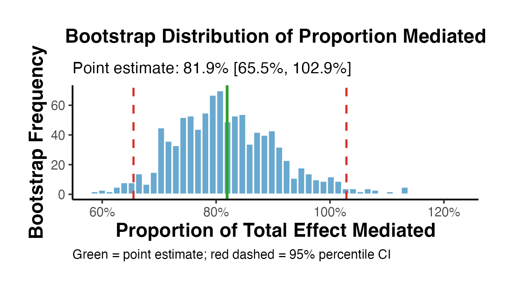
# Decomposition across multiple datasets or subgroups
subgroup_results <- lapply(1:3, function(s) {
set.seed(s * 100)
n_sub <- 400
T_s <- rbinom(n_sub, 1, 0.5)
M_s <- (0.2 + 0.1 * s) * T_s + rnorm(n_sub, 0, 0.8)
Y_s <- (0.5 - 0.05 * s) * M_s + 0.15 * T_s + rnorm(n_sub, 0, 0.7)
m_med <- lm(M_s ~ T_s)
m_out <- lm(Y_s ~ T_s + M_s)
a_s <- coef(m_med)["T_s"]
b_s <- coef(m_out)["M_s"]
cp_s <- coef(m_out)["T_s"]
ie_s <- a_s * b_s
data.frame(
Subgroup = paste0("Group ", s),
Indirect = ie_s,
Direct = cp_s,
Total = ie_s + cp_s
)
})
sg_df <- do.call(rbind, subgroup_results)
sg_long <- tidyr::pivot_longer(sg_df, cols = c("Indirect", "Direct"),
names_to = "Component", values_to = "Estimate")
ggplot(sg_long, aes(x = Subgroup, y = Estimate, fill = Component)) +
geom_col(position = "stack", alpha = 0.85, width = 0.6) +
geom_hline(yintercept = 0, linetype = "dashed") +
geom_text(data = sg_df,
aes(x = Subgroup, y = Total + 0.005, label = round(Total, 3),
fill = NULL),
inherit.aes = FALSE, fontface = "bold", size = 4) +
scale_fill_manual(values = c("Indirect" = "#4393C3", "Direct" = "#D73027"),
name = "Effect Component") +
labs(
title = "Mediation Decomposition Across Subgroups",
subtitle = "Stacked bars show direct and indirect components; label = total effect",
x = NULL,
y = "Effect Estimate"
) +
ama_theme()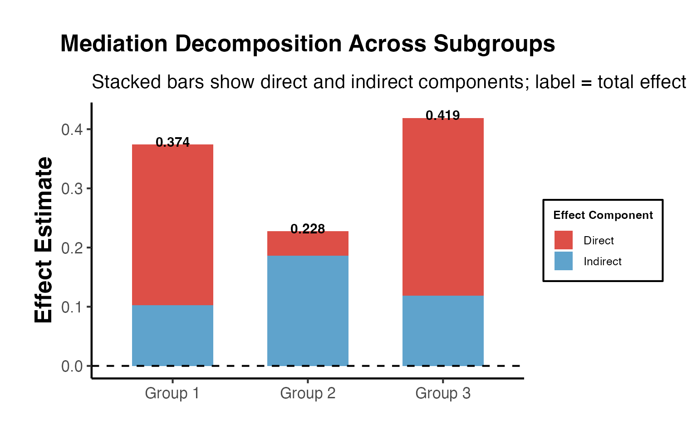
SEM provides a flexible framework for mediation analysis, especially with multiple mediators, latent variables, or complex causal structures.
lavaan
library(lavaan)
# lavaan syntax for simple mediation
model_simple <- "
# Mediator model (a path)
M ~ a*T + X
# Outcome model (b and c' paths)
Y ~ cp*T + b*M + X
# Defined indirect and total effects
indirect := a*b
direct := cp
total := cp + a*b
prop_med := a*b / (cp + a*b)
"
set.seed(42)
fit_simple <- lavaan::sem(model_simple, data = med_data,
se = "bootstrap", bootstrap = 500)
# Parameter estimates
params <- lavaan::parameterEstimates(fit_simple, boot.ci.type = "perc")
params[params$label %in% c("a", "b", "cp", "indirect", "direct", "total", "prop_med"), ]
#> lhs op rhs label est se z pvalue ci.lower
#> 1 M ~ T a 0.491 0.054 9.019 0.000 0.386
#> 3 Y ~ T cp 0.060 0.038 1.580 0.114 -0.012
#> 4 Y ~ M b 0.551 0.021 26.130 0.000 0.510
#> 11 indirect := a*b indirect 0.271 0.030 8.891 0.000 0.205
#> 12 direct := cp direct 0.060 0.038 1.578 0.115 -0.012
#> 13 total := cp+a*b total 0.331 0.047 7.004 0.000 0.241
#> 14 prop_med := a*b/(cp+a*b) prop_med 0.818 0.102 8.039 0.000 0.645
#> ci.upper
#> 1 0.600
#> 3 0.139
#> 4 0.592
#> 11 0.338
#> 12 0.139
#> 13 0.431
#> 14 1.045
# Model fit indices
fit_indices <- lavaan::fitmeasures(fit_simple,
c("chisq", "df", "pvalue", "cfi", "tli",
"rmsea", "rmsea.ci.lower", "rmsea.ci.upper",
"srmr", "aic", "bic"))
print(round(fit_indices, 4))
#> chisq df pvalue cfi tli
#> 0.000 0.000 NA 1.000 1.000
#> rmsea rmsea.ci.lower rmsea.ci.upper srmr aic
#> 0.000 0.000 0.000 0.000 4132.198
#> bic
#> 4166.553Interpretation guidelines for mediation SEM fit: - CFI / TLI > 0.95: Good fit - RMSEA < 0.06: Good fit (< 0.08 acceptable) - SRMR < 0.08: Good fit - p-value for chi-square > 0.05: Model cannot be rejected (but often overpowered with large N)
# Modification indices (misspecification diagnostics)
mi <- lavaan::modindices(fit_simple, sort. = TRUE, maximum.number = 10)
print(mi[mi$op != "~~" | mi$lhs != mi$rhs, ])
#> [1] lhs op rhs mi epc sepc.lv sepc.all sepc.nox
#> <0 rows> (or 0-length row.names)
set.seed(111)
n_sem <- 500
T_sem <- rbinom(n_sem, 1, 0.5)
M_sem <- 0.5 * T_sem + rnorm(n_sem, 0, 0.8)
Y1_sem <- 0.3 * M_sem + 0.2 * T_sem + rnorm(n_sem, 0, 0.7)
Y2_sem <- 0.4 * M_sem + 0.1 * T_sem + rnorm(n_sem, 0, 0.8)
df_sem2 <- data.frame(T = T_sem, M = M_sem, Y1 = Y1_sem, Y2 = Y2_sem)
model_multi <- "
M ~ a*T
Y1 ~ b1*M + cp1*T
Y2 ~ b2*M + cp2*T
indirect_Y1 := a*b1
indirect_Y2 := a*b2
total_Y1 := cp1 + a*b1
total_Y2 := cp2 + a*b2
"
set.seed(42)
fit_multi <- lavaan::sem(model_multi, data = df_sem2,
se = "bootstrap", bootstrap = 300)
params_multi <- lavaan::parameterEstimates(fit_multi, boot.ci.type = "perc")
params_multi[params_multi$label %in%
c("indirect_Y1", "indirect_Y2", "total_Y1", "total_Y2"), ]
#> lhs op rhs label est se z pvalue ci.lower
#> 11 indirect_Y1 := a*b1 indirect_Y1 0.186 0.031 5.947 0 0.129
#> 12 indirect_Y2 := a*b2 indirect_Y2 0.250 0.037 6.806 0 0.179
#> 13 total_Y1 := cp1+a*b1 total_Y1 0.403 0.072 5.636 0 0.261
#> 14 total_Y2 := cp2+a*b2 total_Y2 0.432 0.072 5.991 0 0.295
#> ci.upper
#> 11 0.250
#> 12 0.331
#> 13 0.548
#> 14 0.576blavaan
library(blavaan)
model_bayes <- "
M ~ a*T
Y ~ b*M + cp*T
indirect := a*b
total := cp + a*b
"
# Bayesian SEM (uses Stan or JAGS under the hood)
bfit <- blavaan::bsem(
model_bayes,
data = med_data[1:200, ], # Subset for speed
n.chains = 2,
burnin = 500,
sample = 1000,
seed = 42,
bcontrol = list(cores = 1)
)
blavaan::summary(bfit, neff = TRUE, psrf = TRUE)This section walks through a complete mediation analysis from data to publication-ready output.
Before analyzing data, state your hypotheses explicitly:
set.seed(2025)
n_pub <- 500
# Simulate a realistic mediation scenario:
# Training program (T) -> Knowledge acquisition (M) -> Job performance (Y)
# Covariates: prior experience (X1), education level (X2)
X1 <- rnorm(n_pub, 5, 2) # Prior experience (years)
X2 <- round(rnorm(n_pub, 14, 2)) # Education level
T_pub <- rbinom(n_pub, 1, plogis(-1 + 0.1 * X1 + 0.05 * X2)) # Training assignment
# Knowledge: T -> M (a = 0.45), also from X1 and X2
M_pub <- 0.45 * T_pub + 0.10 * X1 + 0.08 * X2 + rnorm(n_pub, 0, 0.9)
# Performance: M -> Y (b = 0.35), T -> Y (c' = 0.15), also from X1
Y_pub <- 0.35 * M_pub + 0.15 * T_pub + 0.12 * X1 + rnorm(n_pub, 0, 0.8)
df_pub <- data.frame(T = T_pub, M = M_pub, Y = Y_pub, X1 = X1, X2 = X2)
cat("Sample size:", nrow(df_pub), "\n")
#> Sample size: 500
cat("Treatment prevalence:", round(mean(T_pub), 3), "\n")
#> Treatment prevalence: 0.574
cat("Outcome mean:", round(mean(Y_pub), 3), "SD:", round(sd(Y_pub), 3), "\n")
#> Outcome mean: 1.304 SD: 0.957
desc_df <- df_pub %>%
tidyr::pivot_longer(cols = everything(), names_to = "Variable", values_to = "Value") %>%
dplyr::group_by(Variable) %>%
dplyr::summarise(
N = dplyr::n(),
Mean = round(mean(Value, na.rm = TRUE), 3),
SD = round(sd(Value, na.rm = TRUE), 3),
Min = round(min(Value, na.rm = TRUE), 3),
Max = round(max(Value, na.rm = TRUE), 3),
.groups = "drop"
)
knitr::kable(desc_df, caption = "Table 1. Descriptive Statistics")| Variable | N | Mean | SD | Min | Max |
|---|---|---|---|---|---|
| M | 500 | 1.823 | 0.984 | -0.928 | 5.025 |
| T | 500 | 0.574 | 0.495 | 0.000 | 1.000 |
| X1 | 500 | 4.992 | 1.980 | -0.698 | 10.706 |
| X2 | 500 | 13.992 | 2.049 | 8.000 | 21.000 |
| Y | 500 | 1.304 | 0.957 | -1.381 | 4.161 |
| T | M | Y | X1 | X2 | |
|---|---|---|---|---|---|
| T | 1.000 | 0.212 | 0.127 | 0.049 | 0.054 |
| M | 0.212 | 1.000 | 0.446 | 0.243 | 0.188 |
| Y | 0.127 | 0.446 | 1.000 | 0.319 | 0.121 |
| X1 | 0.049 | 0.243 | 0.319 | 1.000 | 0.045 |
| X2 | 0.054 | 0.188 | 0.121 | 0.045 | 1.000 |
bk1 <- lm(Y ~ T + X1 + X2, data = df_pub)
bk2 <- lm(M ~ T + X1 + X2, data = df_pub)
bk3 <- lm(Y ~ T + M + X1 + X2, data = df_pub)
# Summary table
bk_table <- data.frame(
Parameter = c("T -> Y (total)", "T -> M (a)", "M -> Y (b)", "T -> Y (c', direct)"),
Estimate = c(
coef(bk1)["T"], coef(bk2)["T"],
coef(bk3)["M"], coef(bk3)["T"]
),
SE = c(
summary(bk1)$coef["T", 2], summary(bk2)$coef["T", 2],
summary(bk3)$coef["M", 2], summary(bk3)$coef["T", 2]
),
p_value = c(
summary(bk1)$coef["T", 4], summary(bk2)$coef["T", 4],
summary(bk3)$coef["M", 4], summary(bk3)$coef["T", 4]
)
)
bk_table$Estimate <- round(bk_table$Estimate, 4)
bk_table$SE <- round(bk_table$SE, 4)
bk_table$p_value <- round(bk_table$p_value, 4)
knitr::kable(bk_table, caption = "Table 3. Baron-Kenny Path Estimates")| Parameter | Estimate | SE | p_value |
|---|---|---|---|
| T -> Y (total) | 0.2058 | 0.0814 | 0.0118 |
| T -> M (a) | 0.3823 | 0.0836 | 0.0000 |
| M -> Y (b) | 0.3670 | 0.0406 | 0.0000 |
| T -> Y (c’, direct) | 0.0655 | 0.0771 | 0.3959 |
set.seed(42)
pub_result <- mediation_analysis(
data = df_pub,
outcome = "Y",
treatment = "T",
mediator = "M",
covariates = c("X1", "X2"),
sims = 1000,
seed = 42
)
# Publication-ready table
med_table <- pub_result$summary_df
med_table$estimate <- round(med_table$estimate, 4)
med_table$ci_lower <- round(med_table$ci_lower, 4)
med_table$ci_upper <- round(med_table$ci_upper, 4)
med_table$CI_95 <- paste0("[", med_table$ci_lower, ", ", med_table$ci_upper, "]")
knitr::kable(
med_table[, c("effect", "estimate", "CI_95")],
col.names = c("Effect", "Estimate", "95% CI"),
caption = "Table 4. Causal Mediation Analysis Results (Imai et al. 2010)"
)| Effect | Estimate | 95% CI |
|---|---|---|
| ACME (Indirect) | 0.140 | [0.0761, 0.2149] |
| ADE (Direct) | 0.065 | [-0.082, 0.2196] |
| Total Effect | 0.205 | [0.05, 0.3665] |
med_m_pub <- lm(M ~ T + X1 + X2, data = df_pub)
med_y_pub <- lm(Y ~ T + M + X1 + X2, data = df_pub)
set.seed(42)
med_pub_obj <- mediation::mediate(
model.m = med_m_pub,
model.y = med_y_pub,
treat = "T",
mediator = "M",
sims = 500
)
sens_pub <- mediation::medsens(med_pub_obj, rho.by = 0.05, sims = 100)
s_pub <- summary(sens_pub)
cat("Critical rho (ACME = 0):", round(s_pub$rho[1], 3), "\n")
#> Critical rho (ACME = 0): -0.95
cat("R² (M residuals):", round(s_pub$r.square.m[1], 3), "\n")
#> R² (M residuals): 0.127
cat("R² (Y residuals):", round(s_pub$r.square.y[1], 3), "\n")
#> R² (Y residuals): 0.249
pub_plot_df <- pub_result$summary_df
pub_plot_df$effect <- factor(pub_plot_df$effect,
levels = c("ACME (Indirect)", "ADE (Direct)", "Total Effect"))
ggplot(pub_plot_df, aes(x = effect, y = estimate, fill = effect)) +
geom_col(alpha = 0.88, width = 0.5) +
geom_errorbar(aes(ymin = ci_lower, ymax = ci_upper),
width = 0.15, linewidth = 0.9, color = "gray20") +
geom_hline(yintercept = 0, linetype = "dashed", color = "gray50", linewidth = 0.7) +
geom_text(aes(label = sprintf("β = %.3f", estimate),
y = estimate + 0.008 * sign(estimate)),
vjust = -0.3, size = 3.8, fontface = "bold") +
scale_fill_manual(values = c(
"ACME (Indirect)" = "#4393C3",
"ADE (Direct)" = "#D73027",
"Total Effect" = "#2CA02C"
)) +
scale_y_continuous(expand = expansion(mult = c(0.1, 0.2))) +
labs(
title = "Figure 1. Causal Mediation Analysis: Training → Knowledge → Performance",
subtitle = paste0("N = ", nrow(df_pub),
"; proportion mediated = ",
round(pub_result$prop_mediated * 100, 1), "%"),
x = NULL,
y = "Unstandardized Effect (95% CI)",
caption = paste0("Note: Effects estimated via Imai et al. (2010) using 1000 quasi-Bayesian simulations.\n",
"ACME = Average Causal Mediation Effect; ADE = Average Direct Effect.\n",
"Sequential ignorability assumed. See sensitivity analysis for robustness.")
) +
ama_theme() +
theme(legend.position = "none")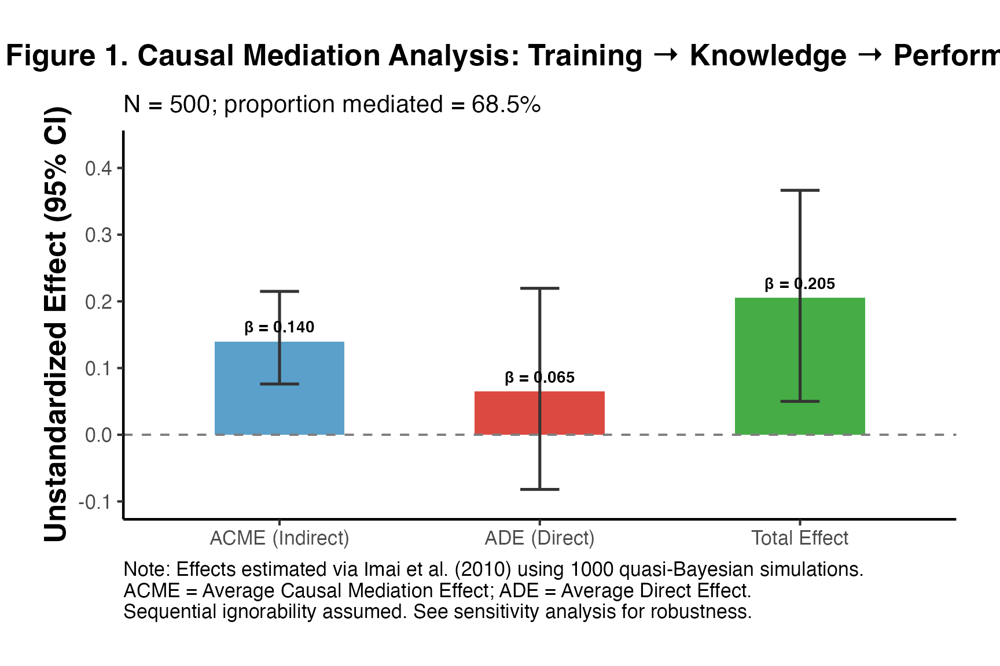
The following text demonstrates how to report mediation results following APA and top journal conventions:
We conducted a causal mediation analysis following Imai et al. (2010) to examine whether knowledge acquisition (M) mediates the effect of the training program (T) on job performance (Y), controlling for prior experience (X1) and education level (X2). Results revealed a statistically significant total effect of training on performance (β = 0.205, 95% CI [0.05, 0.366]). The average causal mediation effect (ACME; indirect effect through knowledge acquisition) was β = 0.14 (95% CI [0.076, 0.215]), accounting for 68.5% of the total effect. The average direct effect (ADE) was β = 0.065 (95% CI [-0.082, 0.22]), indicating partial mediation. Sensitivity analysis confirmed that the ACME was robust to moderate violations of sequential ignorability.
The following checklist reflects best practices from VanderWeele (2016) and the APA mediation reporting standards:
| Item | Status |
|---|---|
| State hypothesized causal model | ✓ Stated in theory section |
| Report total effect | ✓ Reported with CI |
| Report ACME (indirect effect) | ✓ Reported with CI |
| Report ADE (direct effect) | ✓ Reported with CI |
| Report proportion mediated | ✓ Reported with CI |
| Specify identification assumptions | ✓ Sequential ignorability stated |
| Conduct sensitivity analysis | ✓ Imai-Keele medsens reported |
| Report simulation method and number | ✓ Quasi-Bayesian, 1000 sims |
| Address alternative explanations | Recommended in manuscript |
| Pre-register if possible | Recommended |
| Estimand | Symbol | When to Use |
|---|---|---|
| ACME (T=0) | Indirect effect in control population | |
| ACME (T=1) | Indirect effect in treated population | |
| Average ACME | Default in mediation::mediate()
|
|
| ADE (T=0) | Direct effect with M at control level | |
| ADE (T=1) | Direct effect with M at treated level | |
| Total Effect | Overall treatment effect | |
| Proportion Mediated | PM | Fraction of TE through M |
| CDE | CDE() | Direct effect with M set to |
| NDE / PNDE | NDE | Direct effect (with M at natural control level) |
| NIE / TNIE | NIE | Indirect effect (ACME equivalent) |
| Method | Key Assumption | Test Available? |
|---|---|---|
| Baron-Kenny | Sequential ignorability (implicit) | No |
| Imai et al. (2010) | Sequential ignorability (explicit) | Via sensitivity (rho) |
| Natural effects | Cross-world independence | No |
| Front-door | No direct T → Y; no T → M confounding | Partially |
| SEM | Sequential ignorability + model form | Model fit tests |
| DiD mediation | Parallel trends for both M and Y | Pre-trend tests |
| Lee bounds | Monotonicity of selection | No (identifying bound) |
| Package | Function | Purpose |
|---|---|---|
causalverse |
mediation_analysis() |
Wrapper for Imai et al. mediation |
causalverse |
med_ind() |
Monte Carlo indirect effects |
causalverse |
lee_bounds() |
Lee bounds for selected mediators |
mediation |
mediate() |
Core causal mediation |
mediation |
medsens() |
Sensitivity analysis |
lavaan |
sem() |
SEM-based mediation |
blavaan |
bsem() |
Bayesian SEM mediation |
grf |
causal_forest() |
Heterogeneous mediation |
CMAverse |
cmest() |
VanderWeele decomposition |
The Baron-Kenny “four steps” do not establish causality. They establish statistical associations. The causal interpretation requires: 1. A well-articulated theoretical mechanism 2. Sequential ignorability (or a strong substitute) 3. No treatment-mediator interaction that is ignored
Guidance: Always use the Imai et al. (2010) framework and explicitly acknowledge sequential ignorability as an assumption.
When is measured with error (), both the estimated path and ACME will be attenuated. This is a form of “regression dilution.”
set.seed(1234)
n_me <- 500
T_me <- rbinom(n_me, 1, 0.5)
M_me <- 0.5 * T_me + rnorm(n_me, 0, 0.8) # True M
M_obs <- M_me + rnorm(n_me, 0, 0.6) # Observed M with error (noise SD = 0.6)
Y_me <- 0.4 * M_me + 0.2 * T_me + rnorm(n_me, 0, 0.7)
# With true M
m2_true <- lm(M_me ~ T_me)
m3_true <- lm(Y_me ~ T_me + M_me)
ie_true <- coef(m2_true)["T_me"] * coef(m3_true)["M_me"]
# With error-prone M
m2_obs <- lm(M_obs ~ T_me)
m3_obs <- lm(Y_me ~ T_me + M_obs)
ie_obs <- coef(m2_obs)["T_me"] * coef(m3_obs)["M_obs"]
cat("Indirect effect with true M: ", round(ie_true, 4), "(true: 0.20)\n")
#> Indirect effect with true M: 0.2195 (true: 0.20)
cat("Indirect effect with mismeasured M: ", round(ie_obs, 4), "(attenuated)\n")
#> Indirect effect with mismeasured M: 0.1716 (attenuated)
cat("Attenuation factor (obs/true): ", round(ie_obs/ie_true, 3), "\n")
#> Attenuation factor (obs/true): 0.781
cat("\nImplication: Measurement error in M biases ACME toward zero (attenuation bias).\n")
#>
#> Implication: Measurement error in M biases ACME toward zero (attenuation bias).When and are highly correlated, estimating their separate effects in the outcome model becomes unstable. This inflates standard errors and can produce counterintuitive signs.
set.seed(5678)
n_mc <- 400
T_col <- rbinom(n_mc, 1, 0.5)
M_col <- 0.9 * T_col + rnorm(n_mc, 0, 0.3) # High T-M correlation
Y_col <- 0.3 * M_col + 0.1 * T_col + rnorm(n_mc, 0, 0.7)
cat("Correlation between T and M:", round(cor(T_col, M_col), 3), "\n")
#> Correlation between T and M: 0.842
m3_mc <- lm(Y_col ~ T_col + M_col)
cat("\nOutcome model with high T-M collinearity:\n")
#>
#> Outcome model with high T-M collinearity:
print(summary(m3_mc)$coefficients)
#> Estimate Std. Error t value Pr(>|t|)
#> (Intercept) 0.02303462 0.04747063 0.4852393 0.62777425
#> T_col 0.08801410 0.13449805 0.6543894 0.51323984
#> M_col 0.26482370 0.12131831 2.1828832 0.02962961
# Variance Inflation Factor (VIF)
if (requireNamespace("car", quietly = TRUE)) {
cat("\nVIF values:\n")
print(car::vif(m3_mc))
} else {
# Manual VIF
r2_T <- summary(lm(T_col ~ M_col))$r.squared
vif_T <- 1 / (1 - r2_T)
cat("\nVIF for T:", round(vif_T, 2), "\n")
cat("(VIF > 10 suggests problematic multicollinearity)\n")
}
#>
#> VIF values:
#> T_col M_col
#> 3.432088 3.432088Including post-treatment confounders (variables that are causally between and , or between and ) in the models can introduce collider bias.
Recommended covariate inclusion strategy:
| Variable Type | Include in M model? | Include in Y model? |
|---|---|---|
| Pre-treatment baseline | Yes | Yes |
| Post-treatment variable (T → L → M) | No | No |
| as M-Y confounder (T → L, L → Y) | No | Yes (carefully) |
| Collider (T → C ← Y) | No | No |
If the mediator may also influence treatment (e.g., in longitudinal designs), then the standard mediation model is mis-specified. In such cases:
Mediation studies are frequently underpowered. Detecting an indirect effect of size requires detecting two separate effects ( and ), so power is typically lower than for a single-path analysis.
# Power for Sobel test under various scenarios
# Following Fritz & MacKinnon (2007): power depends on a, b, and n
power_sobel <- function(n, a, b, se_a, se_b, alpha = 0.05) {
# Sobel SE
se_ab <- sqrt(b^2 * se_a^2 + a^2 * se_b^2)
# Noncentrality parameter
lambda <- abs(a * b) / se_ab
# Approximate SE based on path lengths
z_crit <- qnorm(1 - alpha/2)
# Power
pnorm(lambda - z_crit) + pnorm(-lambda - z_crit)
}
# Simulate power across sample sizes
power_grid <- expand.grid(
n = c(50, 100, 200, 400, 800),
a = c(0.2, 0.3, 0.5),
b = c(0.2, 0.3)
)
power_grid$power <- mapply(function(n, a, b) {
# Approximate SEs for standardized paths
se_a_approx <- sqrt((1 - a^2) / (n - 2))
se_b_approx <- sqrt((1 - b^2 - a^2) / (n - 3))
power_sobel(n, a, b, se_a_approx, se_b_approx)
}, power_grid$n, power_grid$a, power_grid$b)
power_grid$label <- paste0("a=", power_grid$a, ", b=", power_grid$b)
# Print summary
power_wide <- power_grid %>%
dplyr::mutate(power = round(power, 3)) %>%
dplyr::select(n, label, power) %>%
tidyr::pivot_wider(names_from = label, values_from = power)
knitr::kable(power_wide,
caption = "Table: Power for Sobel Test (alpha = 0.05, two-tailed)")| n | a=0.2, b=0.2 | a=0.3, b=0.2 | a=0.5, b=0.2 | a=0.2, b=0.3 | a=0.3, b=0.3 | a=0.5, b=0.3 |
|---|---|---|---|---|---|---|
| 50 | 0.171 | 0.230 | 0.326 | 0.222 | 0.349 | 0.571 |
| 100 | 0.302 | 0.416 | 0.581 | 0.399 | 0.615 | 0.866 |
| 200 | 0.536 | 0.701 | 0.869 | 0.678 | 0.894 | 0.992 |
| 400 | 0.828 | 0.942 | 0.992 | 0.930 | 0.995 | 1.000 |
| 800 | 0.985 | 0.999 | 1.000 | 0.998 | 1.000 | 1.000 |
ggplot(power_grid, aes(x = n, y = power, color = label, group = label)) +
geom_line(linewidth = 1.1) +
geom_point(size = 2.5) +
geom_hline(yintercept = 0.80, linetype = "dashed", color = "gray40") +
geom_hline(yintercept = 0.90, linetype = "dotted", color = "gray60") +
annotate("text", x = 820, y = 0.81, label = "80% power", hjust = 1, size = 3.5) +
annotate("text", x = 820, y = 0.91, label = "90% power", hjust = 1, size = 3.5) +
scale_x_continuous(breaks = c(50, 100, 200, 400, 800)) +
scale_y_continuous(limits = c(0, 1), labels = scales::percent) +
labs(
title = "Power Analysis for Mediation (Sobel Test)",
subtitle = "Power to detect indirect effect ab at alpha = 0.05",
x = "Sample Size",
y = "Statistical Power",
color = "Effect sizes (a, b)",
caption = "Based on analytical Sobel power formula (Fritz & MacKinnon 2007)"
) +
ama_theme()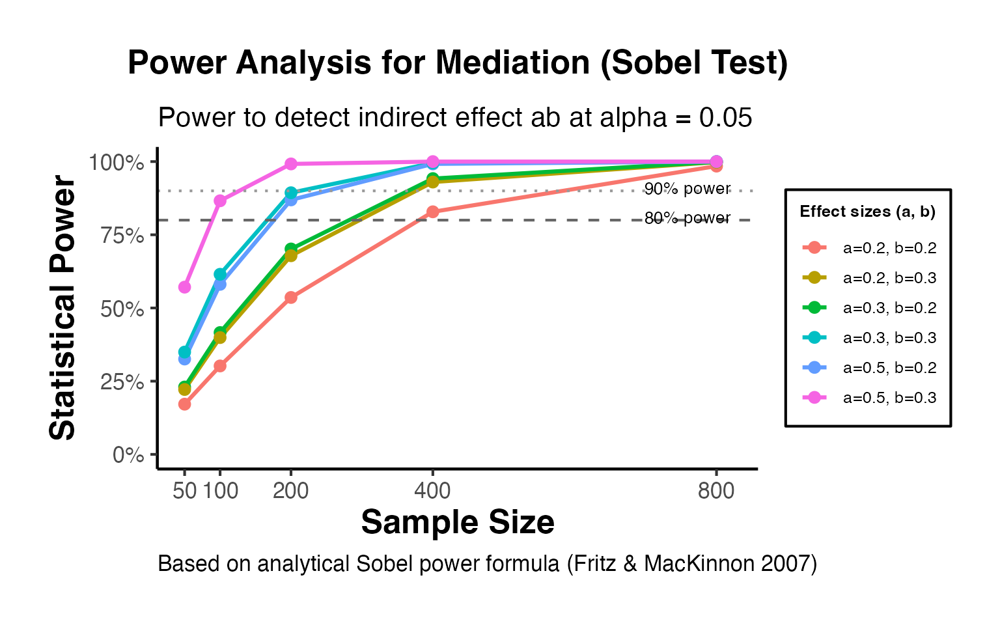
Bootstrap-based power can be estimated via simulation, which is more accurate for small samples:
set.seed(2024)
# Power simulation: n = 200, a = 0.3, b = 0.3 (true ACME = 0.09)
n_sims <- 300 # In practice use 1000+
n_pw <- 200
a_true <- 0.3
b_true <- 0.3
n_boots <- 200 # Per simulation; use 1000+ in practice
power_sim <- sapply(seq_len(n_sims), function(s) {
set.seed(s)
T_pw <- rbinom(n_pw, 1, 0.5)
M_pw <- a_true * T_pw + rnorm(n_pw, 0, sqrt(1 - a_true^2))
Y_pw <- b_true * M_pw + rnorm(n_pw, 0, sqrt(1 - b_true^2))
# Bootstrap indirect effect
boot_ie <- replicate(n_boots, {
idx <- sample(n_pw, replace = TRUE)
m2 <- lm(M_pw[idx] ~ T_pw[idx])
m3 <- lm(Y_pw[idx] ~ T_pw[idx] + M_pw[idx])
coef(m2)[2] * coef(m3)[3]
})
ci <- quantile(boot_ie, c(0.025, 0.975))
# Significant if CI excludes zero
as.numeric(ci[1] > 0 | ci[2] < 0)
})
cat("Simulated power (n=200, a=0.3, b=0.3, 300 reps):\n")
#> Simulated power (n=200, a=0.3, b=0.3, 300 reps):
cat(" Bootstrap power:", round(mean(power_sim), 3), "\n")
#> Bootstrap power: 0.62
cat(" (True ACME = 0.09)\n")
#> (True ACME = 0.09)| Effect magnitude | a (path T→M) | b (path M→Y) | N for 80% power |
|---|---|---|---|
| Small-small | 0.14 | 0.14 | ~21,000 |
| Small-medium | 0.14 | 0.39 | ~3,200 |
| Medium-medium | 0.39 | 0.39 | ~558 |
| Medium-large | 0.39 | 0.59 | ~116 |
| Large-large | 0.59 | 0.59 | ~71 |
Note: These are for Sobel test at alpha = 0.05. Bootstrap tests require somewhat smaller samples for the same power.
When is randomly assigned: - SI.1 is automatically satisfied (no - confounding) - SI.2 still needs to be assumed (no - confounding) - The ACME is identified but not guaranteed by randomization alone
This is the “fundamental problem of mediation” (Imai et al. 2011): even a perfect experiment cannot fully identify causal mechanisms without additional assumptions.
Design 1: Concurrent manipulation of M
If we can randomize both and independently (e.g., in a factorial design), we can directly estimate: - Main effect of (= ADE when M is at the randomized level) - Effect of (= path ) - Interaction
set.seed(1357)
n_fac <- 400
# 2x2 factorial: T and M both randomized
T_fac <- rbinom(n_fac, 1, 0.5)
M_fac <- rbinom(n_fac, 1, 0.5) # Independently randomized M
# True effects: T main = 0.15, M main = 0.40, T*M interaction = 0.10
Y_fac <- 0.15 * T_fac + 0.40 * M_fac + 0.10 * T_fac * M_fac + rnorm(n_fac, 0, 0.8)
# Analysis
m_fac <- lm(Y_fac ~ T_fac * M_fac)
print(summary(m_fac)$coefficients)
#> Estimate Std. Error t value Pr(>|t|)
#> (Intercept) 0.03188609 0.0770785 0.4136833 0.679330038
#> T_fac 0.11386614 0.1103732 1.0316465 0.302867408
#> M_fac 0.34070880 0.1087456 3.1330808 0.001858497
#> T_fac:M_fac 0.13450053 0.1574255 0.8543759 0.393413304
cat("\nIn factorial design:\n")
#>
#> In factorial design:
cat(" ADE (when M = 0):", round(coef(m_fac)["T_fac"], 4), "(true: 0.15)\n")
#> ADE (when M = 0): 0.1139 (true: 0.15)
cat(" ADE (when M = 1):", round(coef(m_fac)["T_fac"] + coef(m_fac)["T_fac:M_fac"], 4),
"(true: 0.25)\n")
#> ADE (when M = 1): 0.2484 (true: 0.25)
cat(" Effect of M: ", round(coef(m_fac)["M_fac"], 4), "(true: 0.40)\n")
#> Effect of M: 0.3407 (true: 0.40)Design 2: Encouragement design (LATE mediation)
Randomize an encouragement that affects but has no direct effect on (exclusion restriction). This gives an IV for .
Design 3: Sequential assignment
Randomize first, then re-randomize among the treated. This directly identifies (the ACME at ) without SI.2.
In observational settings, the following strategies strengthen causal claims:
set.seed(7890)
n_obs <- 600
X_obs <- rnorm(n_obs) # Pre-treatment covariate
T_obs <- rbinom(n_obs, 1, plogis(0.4 * X_obs)) # Observational T
# Unmeasured confounder U (affects M and Y)
U_obs <- rnorm(n_obs, 0, 0.5)
M_obs2 <- 0.5 * T_obs + 0.3 * X_obs + U_obs + rnorm(n_obs, 0, 0.7)
Y_obs2 <- 0.3 * M_obs2 + 0.2 * T_obs + 0.4 * X_obs + 0.6 * U_obs + rnorm(n_obs, 0, 0.6)
# Model A: Naive (ignoring U)
m_naiveM <- lm(M_obs2 ~ T_obs + X_obs)
m_naiveY <- lm(Y_obs2 ~ T_obs + M_obs2 + X_obs)
ie_naive <- coef(m_naiveM)["T_obs"] * coef(m_naiveY)["M_obs2"]
cat("Naive ACME (omitting U): ", round(ie_naive, 4), "\n")
#> Naive ACME (omitting U): 0.2739
cat("True ACME: 0.5 * 0.3 = ", 0.5 * 0.3, "\n")
#> True ACME: 0.5 * 0.3 = 0.15
cat("Bias (due to omitted U): ", round(ie_naive - 0.15, 4), "\n")
#> Bias (due to omitted U): 0.1239
cat("\nThis illustrates that even controlling for X, omitting U biases ACME.\n")
#>
#> This illustrates that even controlling for X, omitting U biases ACME.
cat("Sensitivity analysis is essential in observational mediation.\n")
#> Sensitivity analysis is essential in observational mediation.Baron, R. M., & Kenny, D. A. (1986). The moderator-mediator variable distinction in social psychological research: Conceptual, strategic, and statistical considerations. Journal of Personality and Social Psychology, 51(6), 1173–1182.
Hayes, A. F. (2013). Introduction to mediation, moderation, and conditional process analysis. Guilford Press.
Imai, K., Keele, L., & Tingley, D. (2010). A general approach to causal mediation analysis. Psychological Methods, 15(4), 309–334.
Imai, K., Keele, L., Tingley, D., & Yamamoto, T. (2011). Unpacking the black box of causality: Learning about causal mechanisms from experimental and observational studies. American Political Science Review, 105(4), 765–789.
Lee, D. S. (2009). Training, wages, and sample selection: Estimating sharp bounds on treatment effects. Review of Economic Studies, 76(3), 1071–1102.
Pearl, J. (1995). Causal diagrams for empirical research. Biometrika, 82(4), 669–688.
Pearl, J. (2001). Direct and indirect effects. Proceedings of the Seventeenth Conference on Uncertainty in Artificial Intelligence, 411–420.
Robins, J. M., & Greenland, S. (1992). Identifiability and exchangeability for direct and indirect effects. Epidemiology, 3(2), 143–155.
Selig, J. P., & Preacher, K. J. (2008). Monte Carlo method for assessing mediation: An interactive tool for creating confidence intervals for indirect effects. Available from http://quantpsy.org/.
Sobel, M. E. (1982). Asymptotic confidence intervals for indirect effects in structural equation models. Sociological Methodology, 13, 290–312.
VanderWeele, T. J. (2014). A unification of mediation and interaction: A four-way decomposition. Epidemiology, 25(5), 749–761.
VanderWeele, T. J. (2016). Mediation analysis: A practitioner’s guide. Annual Review of Public Health, 37, 17–32.
VanderWeele, T. J., & Ding, P. (2017). Sensitivity analysis in observational research: Introducing the E-value. Annals of Internal Medicine, 167(4), 268–274.
Wager, S., & Athey, S. (2018). Estimation and inference of heterogeneous treatment effects using random forests. Journal of the American Statistical Association, 113(523), 1228–1242.
Fritz, M. S., & MacKinnon, D. P. (2007). Required sample size to detect the mediated effect. Psychological Science, 18(3), 233–239.
MacKinnon, D. P., Lockwood, C. M., Hoffman, J. M., West, S. G., & Sheets, V. (2002). A comparison of methods to test mediation and other intervening variable effects. Psychological Methods, 7(1), 83–104.
Preacher, K. J., & Hayes, A. F. (2008). Asymptotic and resampling strategies for assessing and comparing indirect effects in multiple mediator models. Behavior Research Methods, 40(3), 879–891.
Tingley, D., Yamamoto, T., Hirose, K., Keele, L., & Imai, K. (2014). mediation: R package for causal mediation analysis. Journal of Statistical Software, 59(5), 1–38.
Rubin, D. B. (2004). Direct and indirect causal effects via potential outcomes. Scandinavian Journal of Statistics, 31(2), 161–170.
sessionInfo()
#> R version 4.5.2 (2025-10-31)
#> Platform: aarch64-apple-darwin20
#> Running under: macOS Tahoe 26.3.1
#>
#> Matrix products: default
#> BLAS: /System/Library/Frameworks/Accelerate.framework/Versions/A/Frameworks/vecLib.framework/Versions/A/libBLAS.dylib
#> LAPACK: /Library/Frameworks/R.framework/Versions/4.5-arm64/Resources/lib/libRlapack.dylib; LAPACK version 3.12.1
#>
#> locale:
#> [1] en_US/en_US/en_US/C/en_US/en_US
#>
#> time zone: America/Los_Angeles
#> tzcode source: internal
#>
#> attached base packages:
#> [1] stats graphics grDevices utils datasets methods base
#>
#> other attached packages:
#> [1] grf_2.5.0 lavaan_0.6-19 mediation_4.5.1
#> [4] sandwich_3.1-1 mvtnorm_1.3-3 Matrix_1.7-4
#> [7] MASS_7.3-65 rio_1.2.4 fixest_0.13.2
#> [10] data.table_1.18.2.1 magrittr_2.0.4 purrr_1.2.1
#> [13] tidyr_1.3.2 dplyr_1.2.0 ggplot2_4.0.2
#> [16] causalverse_1.1.0
#>
#> loaded via a namespace (and not attached):
#> [1] Rdpack_2.6.6 mnormt_2.1.1 gridExtra_2.3
#> [4] rlang_1.1.7 multcomp_1.4-29 dreamerr_1.5.0
#> [7] compiler_4.5.2 mgcv_1.9-3 systemfonts_1.3.1
#> [10] vctrs_0.7.1 quadprog_1.5-8 stringr_1.6.0
#> [13] pkgconfig_2.0.3 shape_1.4.6.1 fastmap_1.2.0
#> [16] backports_1.5.0 labeling_0.4.3 pbivnorm_0.6.0
#> [19] rmarkdown_2.30 nloptr_2.2.1 ragg_1.5.0
#> [22] xfun_0.56 glmnet_4.1-10 cachem_1.1.0
#> [25] jsonlite_2.0.0 stringmagic_1.2.0 systemfit_1.1-30
#> [28] parallel_4.5.2 cluster_2.1.8.1 MatchIt_4.7.2
#> [31] R6_2.6.1 bslib_0.9.0 stringi_1.8.7
#> [34] RColorBrewer_1.1-3 car_3.1-5 boot_1.3-32
#> [37] rpart_4.1.24 lmtest_0.9-40 jquerylib_0.1.4
#> [40] numDeriv_2016.8-1.1 estimability_1.5.1 Rcpp_1.1.1
#> [43] iterators_1.0.14 knitr_1.51 zoo_1.8-15
#> [46] PanelMatch_3.1.3 base64enc_0.1-3 splines_4.5.2
#> [49] nnet_7.3-20 tidyselect_1.2.1 abind_1.4-8
#> [52] rstudioapi_0.17.1 dichromat_2.0-0.1 yaml_2.3.12
#> [55] codetools_0.2-20 lattice_0.22-7 tibble_3.3.1
#> [58] withr_3.0.2 S7_0.2.1 coda_0.19-4.1
#> [61] evaluate_1.0.5 foreign_0.8-90 desc_1.4.3
#> [64] survival_3.8-3 lpSolve_5.6.23 pillar_1.11.1
#> [67] carData_3.0-6 checkmate_2.3.2 foreach_1.5.2
#> [70] stats4_4.5.2 reformulas_0.4.4 generics_0.1.4
#> [73] scales_1.4.0 minqa_1.2.8 xtable_1.8-8
#> [76] glue_1.8.0 emmeans_1.11.2 Hmisc_5.2-4
#> [79] tools_4.5.2 lme4_2.0-1 fs_1.6.6
#> [82] grid_4.5.2 rbibutils_2.4.1 Hotelling_1.0-8
#> [85] colorspace_2.1-2 nlme_3.1-168 htmlTable_2.4.3
#> [88] Formula_1.2-5 cli_3.6.5 textshaping_1.0.4
#> [91] CBPS_0.24 corpcor_1.6.10 gtable_0.3.6
#> [94] sass_0.4.10 digest_0.6.39 TH.data_1.1-5
#> [97] htmlwidgets_1.6.4 farver_2.1.2 htmltools_0.5.8.1
#> [100] pkgdown_2.1.3 lifecycle_1.0.5